Title: Little Kids, Big Adventures: Hiking with Kids Around Knoxville, TN
Title page
Little Kids, Big Adventures: A Guide to Family Hikes Around Knoxville
Katie Rosenberg and Joshua Rosenberg To be published by UT Press (anticipated 2026)
Preface: A Story About a Hike
A Story About a Hike
First comes the vision. A beautiful sunny day out in nature with your family. Your young children happily throwing rocks in rivers, wading in creeks. Oh, look! Little JoJo caught a crawdad! A picnic where everyone enjoys the food and nobody complains because you made the peanut butter and jelly on the dark brown bread (otherwise known as wheat). You cover extensive ground! Your children bask in nature! You get gorgeous pictures to share on social media. Then, the kiddos nap peacefully on the ride home while you and your spouse agree on what music or podcast to listen to.
Record Scratch
Sure, we’d all love for the above vision to be reality, but the truth is a bit messier, potentially whinier (which comes with the territory when doing activities with young kids), and comes with unexpected bumps in the road (also known as surprises, depending on how you look at these kinds of things).
In reality, you might be ready to throw in the towel before you even leave your house. Packing for a day hike seems like it should be simple, but by the time you consider what your family will need and plan properly for the trail you’ll be spending time on, you’ve already expended a lot of mental energy and can’t muster up the patience for the car ride to the trailhead.
Once you arrive, the kids are hungry for the forty-third time, the baby falls and scrapes her knee and refuses to go in the carrier pack, and your oldest can’t be pulled away from the creek just beyond the trailhead to even start the hike.
We’ve been there more times than we can count, and have felt more relief in a hike being over than we felt excitement to go on the hike in the first place. However, we’ve also grown as a family who hikes, honed in on the process, adjusted our expectations, and have built some beautiful memories in the process.
If you’re a family who enjoys the outdoors, wants to enjoy the outdoors, and wants to learn more about the family hike adventures that await you, this guide is for you. In this guide, we’ll provide hiking and gear recommendations, all designed with young families in mind.
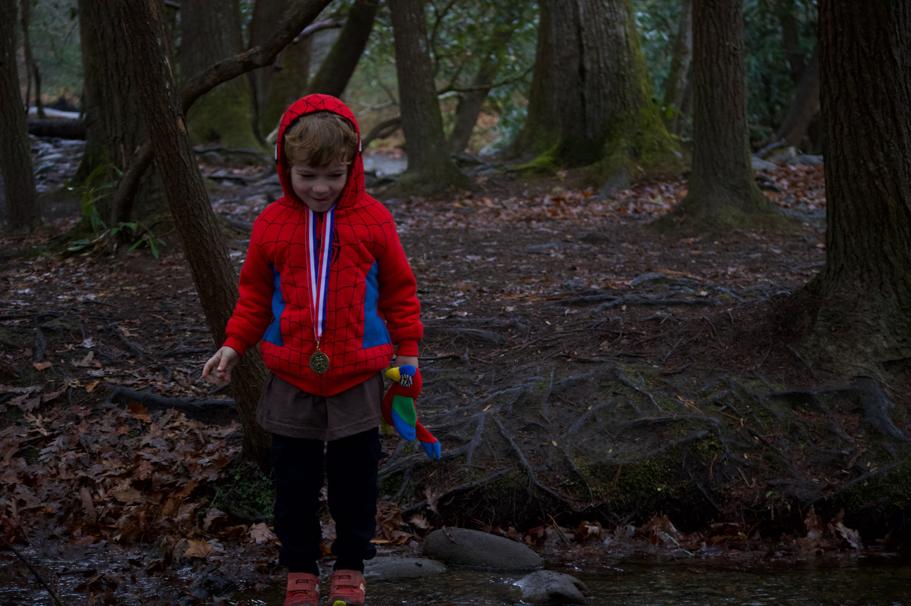
What this Book is About (and Why We Wrote It)
Xx
Who this Book is For
Xx
Where the Hikes Are
Xx
When to Go?
Xx
See you on the trail!
Finding a Hike
What’s the best hike?
What’s the best hike for families? - Avoiding bucket list traveling (but still featuring some epic spots!) - Too many people visiting the busy, crowded places
Age Ranges - Infants: birth - toddler stages lwho are carried - Toddlers: around one-two year-olds who can walk some of the trail (being carried for other parts), or all of short trails. - Little kids: Two- four or five years who can walk all of short trails, and even some parts of lengthier trails. - Big kids: Four -eight or nine who can walk longer distance are who up for bigger challenges - Pre-teens and older: Eight or nine or up
Other Considerations – accessible: To strollers and wheelchairs
Top 5
Top 5 - Very Young Children
- Xx
- Xx
- Xx
- Xx
- Xx
Top 5 - A Short Drive
- Xx
- Xx
- Xx
- Xx
- Xx
Top 5 - Most Beautiful
- Xx
- Xx
- Xx
- Xx
- Xx
Top 5 - Adventures for Older Kids
- Xx
- Xx
- Xx
- Xx
- Xx
Top 5 - Must-do!
- Xx
- Xx
- Xx
- Xx
- Xx
Considerations for Your First Hike
You do not need much specialized gear to go on your first hike. Indeed, select a particular hike at a particular time, and you will not need anything particular at all. We detail those considerations: selecting a particular hike at a particular time and a few other things that are needed on practically every hike.
Define your own adventure. Do you need a hike that will help burn older kids’ energy? Or do you have toddlers who simply want to touch every leaf and rock you pass? Decide what’s most important for your family hike and pick a trail that best supports that!
Give kids’ time. Want to encourage your kids to love hiking and being outside? Let them develop their own interests and explore their own curiosities when you go on a hike. Sometimes this might mean playing in a creek for half of your planned hiking time.
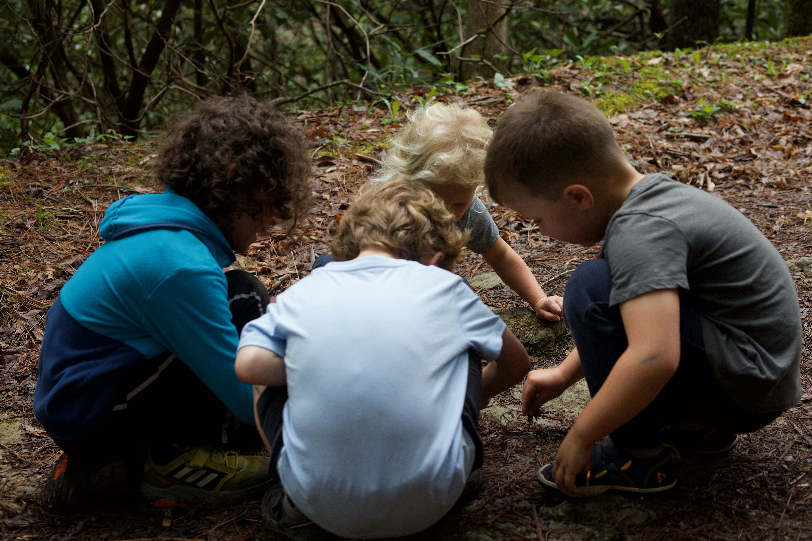
Plan for the basics. Take a look at the weather for the area or region you’re hiking, get a gauge on the terrain, and wear or pack appropriate clothes and shoes. Oh, and snacks. Lots of snacks!
Plan for a mess.
When a kiddo plods through a creek, it sure is nice to have a backup pair of socks and shoes! Sometimes, an emergency change of clothes packed in your bag or in your car can come in handy. Some bandaids or a basic first aid kit is always nice to have in a pinch and, in general, bring more water than you think you’ll need, because you never know!
!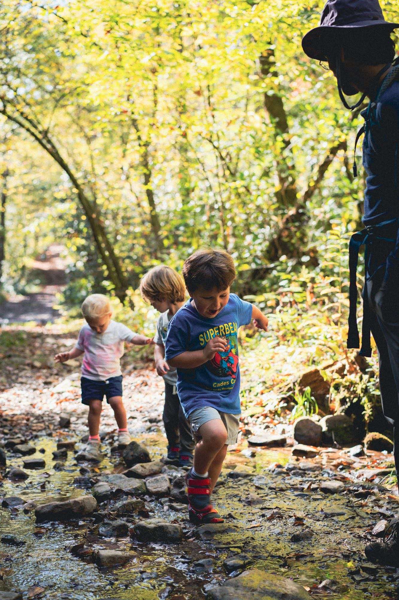
Embrace serendipity. It’s good to have a plan, but don’t be surprised if something better comes along! Maybe you hike further than you thought you would, or perhaps your child surprises you (and themselves!) by taking some time to rock hop across a creek or explore animal tracks.
Introduction
These hikes are within or near Knoxville, in what is often referred to as the Tennessee Valley. The Tennessee Valley includes Knoxville and many other cities that border the mountains that surround Knoxville. This area is known as the Tennessee Valley because of its primary geographic feature: The Tennessee River.
The Tennessee River begins just beyond the city limits of Knoxville, where the Holston and the French Broad Rivers meet. It (literally and figuratively!) contains fewer high points than the Cumberland Plateau and the Great Smoky Mountains, but, it should not be discounted as a destination for hiking.
We think a trip to Seven Islands State Birding Park will make how spectactular this area can be evident. Around 30 minutes away from most places in Knoxville, this is a true destination for not only birders, but also hikers and paddlers.
Other locations are also not only close, but (surprisingly) worthy of a trip. Ijams on the south side of Knoxville–familiar to many in the Knoxville area–has many spectacular features, in addition to being fewer than ten minutes away from downtown.
Other places that we highlight are also worth your time, offering an outdoors respite in addition to the ability to easily be integrated into busy schedules and other commitments. If you are looking for a first family hike, those in this section may make a great selection.
Trail 1: Seven Islands
Key Characteristics
| Trail Name | Seven Islands Loop |
|---|---|
| Region | Knoxville and Surroundings |
| Trail # | 1 |
| Time Estimate - Hiking Fast | 1.5 hours |
| Time Estimate - Hiking Slowly | 3 hours |
| Trail Distance (Miles) | 2.3 |
| Elevation Change | Gentle |
| Pets | Allowed on leash |
| Parking Pass/Entrance Fee | Not Required |
| Restroom(s) | Yes |
| Terrain | Paved; dirt path |
| Trailhead Address | Seven Islands State Birding Park, 2809 Kelly Ln, Kodak, TN 37764 |
| Trailhead GPS Coordinates | 35.95366, -83.68701 |
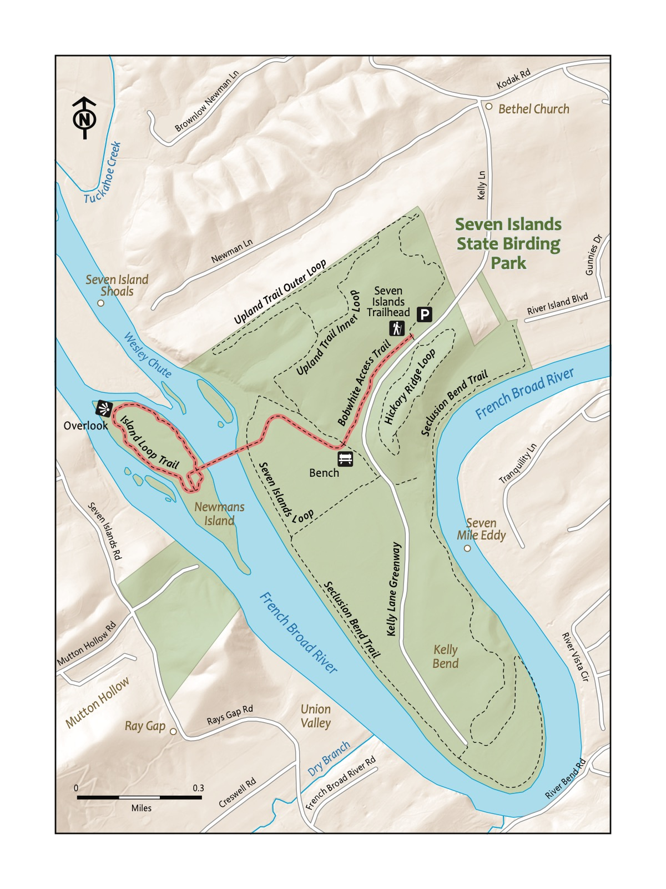
Overview
This is one of our favorite trails in this book—it is the first trail for that reason. Even though it is relatively close to Knoxville, it is simply a fantastic place to hike. For the trail we highlight, a paved path descends through a meadow. Look for birds and deer! The trail crosses a bridge over the French Broad River and hike around a beautiful island (look for side trails and the native paw paw fruit in the fall!) before returning to the start—or pick one of the many other nearby trails in the park. Great for all ages and seasons, though sometimes hot in the summer due to limited shade on the paved part of the trail.
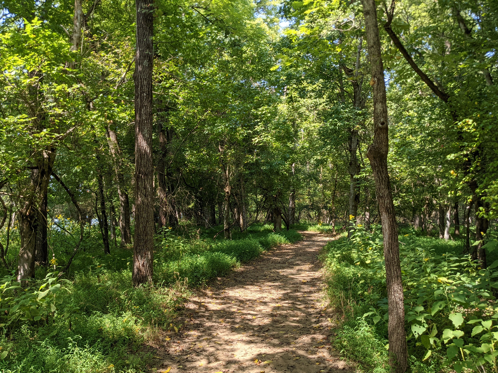
Directions to the Trailhead
Trailhead Address | Seven Islands State Birding Park, 2809 Kelly Ln, Kodak, TN 37764 |
Trailhead GPS Coordinates | 35.95366, -83.68701
Navigate using the above address to the main parking area (note there is another parking area by a boat launch that is not the correct location for this hike!). Park in the large gravel lot. We have never had trouble finding a spot even on the busiest of days. The address of the parking lot at Seven Islands is: 2809 Kelly Ln., Kodak, TN 37764.
Trail Description
| Distance from Start | Description |
|---|---|
| 0.0 | Barn with the blue “barn quilt” featuring four blue birds. You can walk through the barn to begin the hike on the paved Bobwhite Access trail. |
| 0.05 | Bathroom on the left of the trail. |
| 0.1 | Descend through grassy meadows with wildflowers in the spring and early fall. |
| 0.3 | Bench. |
| 0.6 | Start of the Newmans Island Bridge. |
| 0.8 | End of the bridge. Paved trail ends. Turn right onto the Island Loop Trail to hike around the island in a clockwise direction. |
| 0.85 | Picnic table beside a pretty part of the French Broad River. |
| 1.05 | Stick house (kiddo favorite!). |
| 1.5 | Connect back to the bridge, heading back onto the Bobwhite Access Trail. |
| 2 | Climb back up past the meadows. This is the toughest part of the hike (but, it shouldn’t be too steep, and the trailhead is near!). |
| 2.3 | Trailhead. |
Nearby
- Hiking other trails. Hike up the Hickory Ridge trail, another trail at Seven Islands State Birding Park that is accessible from just behind the bathrooms near the parking lot. There are several other great hikes available, including hikes down the Kelly Lane Greenway (the other, wider, paved path near the barn that is gated to prevent cars from driving on it) and the Upland Inner and Outer Trail Loops.
- Enjoying watersports. Consider kayaking, canoeing, or paddleboarding, especially on warm days. There is a great place to put in, Seven Islands Landing and Boat Ramp (2809 Kelly Ln, Kodak, TN 37764). Also, River Sports Outfitters rents kayaks and canoes here during the summer (see https://www.riversportsoutfitters.com/).
- Stopping for a bite to eat and a drink on the way back. On the way home, consider stopping by kid-friendly Walnut Springs Winery (1175 Midway Rd, Knoxville, TN 37914), open Wednesday-Sunday as of this writing.
Trail 2: Ijams Riverside
Key Characteristics
| Distance from Start | Description |
|---|---|
| 0.0 | Start near the doors to the Visitor’s Center. |
| 0.05 | Turn left to begin the North Cove Trail. |
| 0.2 | Turn right onto the River Trail. |
| 0.4 | Short wooden stairs down to the boardwalk section. |
| 0.5 | End of the boardwalk section. |
| 0.6 | Climb rock steps. |
| 0.7 | Turn right on the Tower Trail (or, optionally, remain on the River Trail to head toward Mead’s Quarry). |
| 0.85 | Pass an old communication tower at the high point of the trail; begin to descend back to the Visitor’s Center. |
| 1.03 | Return to the Visitor’s Center. |
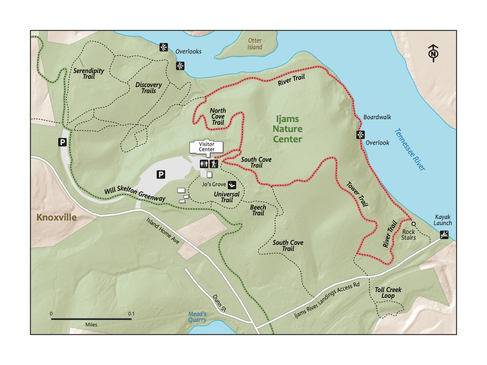
Overview
If you live in Knoxville, then you’ve probably heard of Ijams Nature Center. It’s easy to take for granted, but we seem to find something new every time we visit — and we always have a great time. This hike is meant to be a gentle introduction to what Ijams refers to as the Riverside area (see the Ijams Crag hike for an introduction to the second part of Ijams). The trail starts by the Ijams Nature Center’s visitor center and hikes down through a deep forest to the river. It continues along the boardwalk trail that happens to follow the side of the very first mile of the Tennessee River. The trail returns back up and over a rocky ridge to return to the visitor center—and the play area and links to other trails nearby.

Directions to the Trailhead
| Trailhead Address | Ijams Nature Center, 2915 Island Home Ave, Knoxville, TN 37920 |
|---|---|
| Trailhead GPS Coordinates | 35.95612, -83.86725 |
:—– | :—– |
| Use the above address easily navigate you to the parking area. Park in the large parking lot near the Visitor’s Center. Look for signs for the North Cove Trail; looking toward the front doors to the Visitor’s Center, the trail heads off to the right. |
Trail Description
| Distance from Start | Description |
|---|---|
| 0.0 | Start near the doors to the Visitor’s Center. |
| 0.05 | Turn left to begin the North Cove Trail. |
| 0.2 | Turn right onto the River Trail. |
| 0.4 | Short wooden stairs down to the boardwalk section. |
| 0.5 | End of the boardwalk section. |
| 0.6 | Climb rock steps. |
| 0.7 | Turn right on the Tower Trail (or, optionally, remain on the River Trail to head toward Mead’s Quarry). |
| 0.85 | Pass an old communication tower at the high point of the trail; begin to descend back to the Visitor’s Center. |
| 1.03 | Return to the Visitor’s Center. |
Nearby
- Hiking at Mead’s Quarry. Check out the Ijams Crag hike for a great starting point at the over area that comprises Ijams.
- Visit Jo’s Grove. Near the Visitor’s Center, which features a fun cabin and a wooded area for kids to play and goof (this is a premiere hide-and-seek spot!).
- Grabbing a bite to eat on the south side of Knoxville. The south side of town near Ijams is a great place to grab a bite to eat. Our favorites include South Coast Pizza (1103 Sevier Ave, Knoxville, TN 37920) and Angry Dumplings Tea (1119 Sevier Ave, Knoxville, TN 37920). Breweries nearby also abound.
Trail 3: Lakeshore Park
Key Characteristics
| Trail Name | Lakeshore Park |
|---|---|
| Region | Knoxville and Surroundings |
| Trail # | 3 |
| Time Estimate - Hiking Fast | 1.5 hours |
| Time Estimate - Hiking Slowly | 2.5 hours |
| Trail Distance (Miles) | 2.2 |
| Elevation Change | Gentle |
| Pets | Allowed on leash |
| Parking Pass/Entrance Fee | Not Required |
| Restroom(s) | Yes |
| Terrain | Paved |
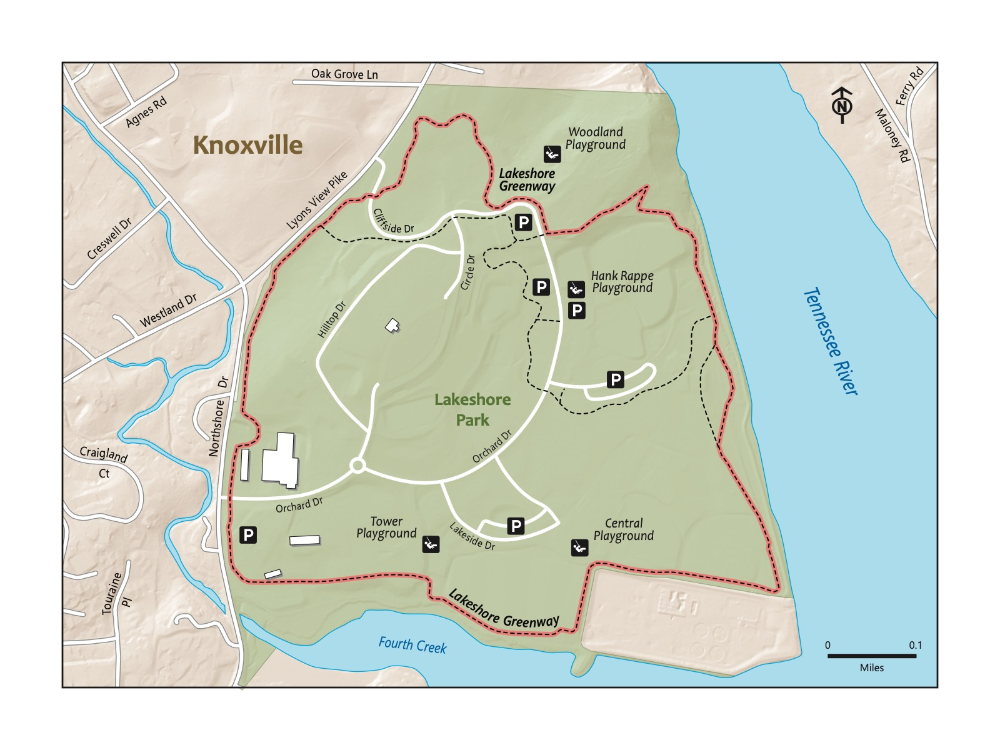
Overview
A gem in Knoxville’s city park system. This hike, entirely on a paved path, circles the perimeter of the park, featuring high points (and views of the Smokies) and a boardwalk along the river. Traverses past four excellent play areas this hike winds past. Well known, but not overrated — a great spot for a hike that could fit into a busy weekend, or even a weeknight. Good for kids of all ages; consider looping back to your start point with younger children.
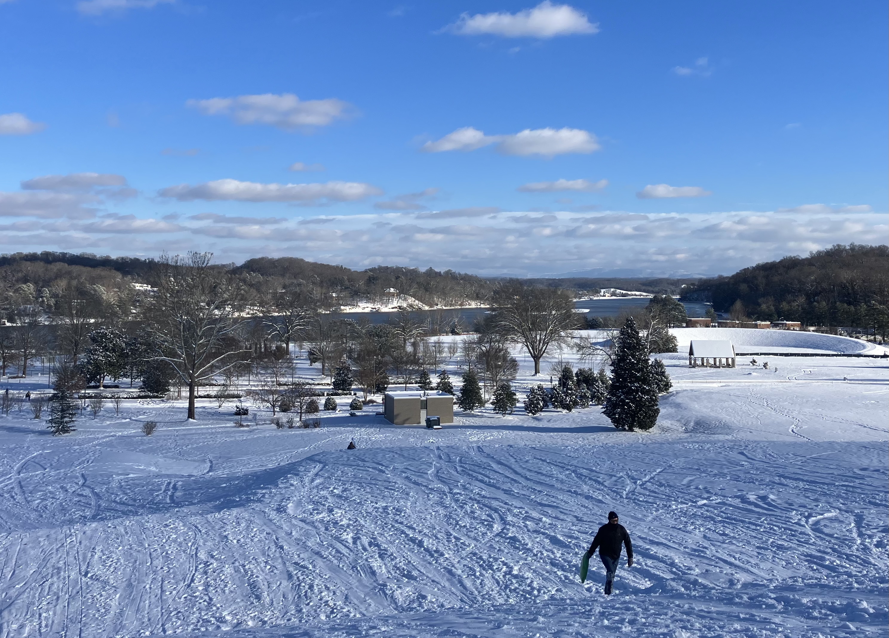
Directions to the Trailhead
| Trailhead Address | Lakeshore Park, 6014 Lyons View Pike, Knoxville, TN 37919 |
|---|---|
| Trailhead GPS Coordinates | 35.92389, -83.990 |
The address above is suitable for navigating to Lakeshore in general, but it’s a large park! Our hike starts at a large parking area near the center of the park. To find it, entering Lakeshor from Lyons View Pike, turn left onto Cliffside Dr., and park in the large parking area on the right, immediately past Circle Dr. Start on the greenway near the parking lot, on the same side of the road on which you are parked. Of course, you can park elsewhere nearby or in any parking area at Lakeshore.
Trail Description
| Distance from Start | Description |
|---|---|
| 0.0 | Cross Orchard Drive, heading clockwise on the paved greenway. Note the greenway on the left, which immediately heads toward the Huie Woodland Playground. |
| 0.05 | Bench and overlook to the Smokies. Can you spy Clingman’s Dome? Note that Hank Rappé playground is immediately below the greenway (to your right). |
| 0.15 | Steep descent! |
| 0.4 | Optional boardwalk section (recommended!). Check out the viewing platform overlooking the Tennessee River around 200 feet ahead on the left. |
| 0.5 | Boardwalk and the primary greenway reconnect. |
| 0.9 | Central Playground on the right. |
| 1.2 | Tower Playground on the right. |
| 1.5 | Ascent (followed by a little hill back down) begins. |
| 2.2 | Traihead. |
Nearby
- Playing at one of the many playgrounds. There are four awesome playgrounds at Lakeshore — Hank Rappé (universal playground with a bit of everything), Huie Woodland (nature-themed), Tower (lots of climbing opportunities!), and Central (smaller, and with workout equipment nearby).
- Having a picnic. Lakeshore seems made for picnics. Bring one along for a grassy area or numerous seating areas near the Hank Rappé, Tower, and Central playgrounds.
Trail 4: High Ground Park
Key Characteristics
| Trail Name | High Ground Park |
|---|---|
| Region | Knoxville and Surroundings |
| Trail # | 4 |
| Time Estimate - Hiking Fast | 0.5 hours |
| Time Estimate - Hiking Slowly | 1 hour |
| Trail Distance (Miles) | 0.7 |
| Elevation Change | Gentle |
| Pets | Allowed on leash |
| Parking Pass/Entrance Fee | Not Required |
| Restroom(s) | No |
| Terrain | Paved; dirt path |
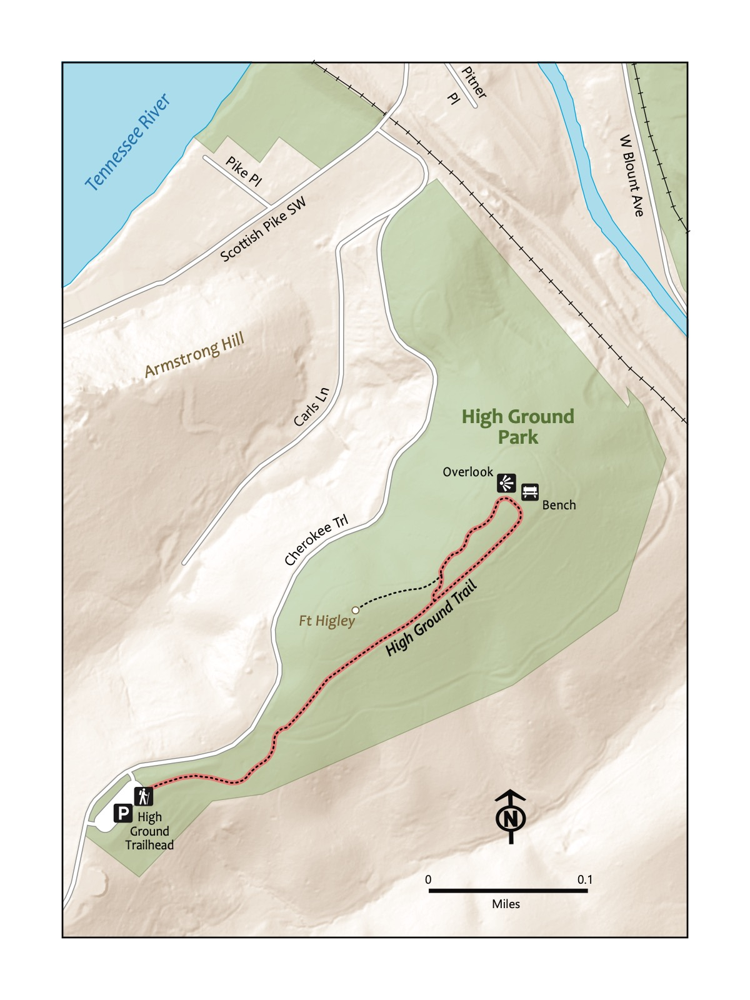
Overview
It is one of the closest hikes to the city center of Knoxville — and one of a few that is highly stroller-friendly. This short but sweet hike is perfect as a real but accessible outing for toddlers and little kids. The red chairs at the top are a fun stopping point. The deep woods are pretty in the fall. This could be a great first hike for toddlers—it was one of the first for our little one, and we loved how accessible it was.

Directions to the Trailhead
| Trailhead Address | High Ground Park, 1000 Cherokee Trail, Knoxville, TN 37920 |
|---|---|
| Trailhead GPS Coordinates | 35.93824, -83.9258 |
The trail begins from the parking lot at the above address; look for the paved path near the back of the parking lot. You can’t miss it!
Trail Description
| Distance from Start | Description |
|---|---|
| 0 | Start off on the trail with a gentle descent. |
| 0.1 | Enter the wooded part of the hike and begin a gentle climb. |
| 0.35 | Red chairs and the large open area. Head toward the mowed grassy section (followed by gravel). Alternatively, particularly if in a stroller, return on the paved pathway you took. |
| 0.4 | Look for a spur trail that heads to the site of the Fort Higley earthworks, constructed during the Civil War by Union forces. |
| 0.7 | Traihead. |
Nearby
- Stop by a fun food hall. The nearby Kern’s Food Hall (2201 Kerns Rising Way, Knoxville, TN 37920) has a good range of options — and an outdoor play area for kids to romp around.
- Hiking the nearby River Bluff Wildlife area. The nearby River Bluff Wildlife Area is an interesting counterbalance to the ease of High Ground Park - it features a short but rustic hike to a pretty overlook of the city. Visit Knoxville’s website (https://www.visitknoxville.com/) has more information and a nice map.
Trail 5: UT Arboretum
Key Characteristics
| Trail Name | University of Tennessee Arboretum |
|---|---|
| Region | Knoxville and Surroundings |
| Trail # | 5 |
| Time Estimate - Hiking Fast | 0.5 hours |
| Time Estimate - Hiking Slowly | 1 hour |
| Trail Distance (Miles) | 0.9 |
| Elevation Change | Gentle |
| Pets | Not Allowed |
| Parking Pass/Entrance Fee | Not Required |
| Restroom(s) | No |
| Terrain | Paved |
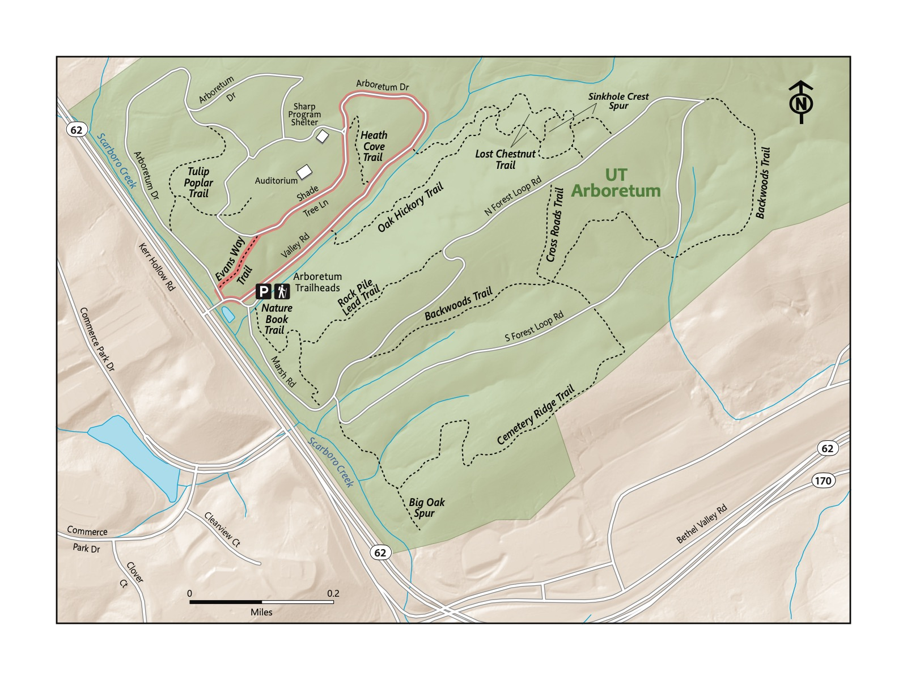
Overview
A gem that is off the radar of many in Knoxville. Starts at a trailhead with trails heading in many directions. Walk up the paved path past botanical specimens–including unusual conifers! Circles around park facilities past a pretty field and forests. Upon returning to the start, there are other trails to the different ecological zones represented in an area that is worth a visit; we like the trails near the marshy area with the surprising, clear creek, perfect for splashing in warm weather. Suitable for kids of all ages.
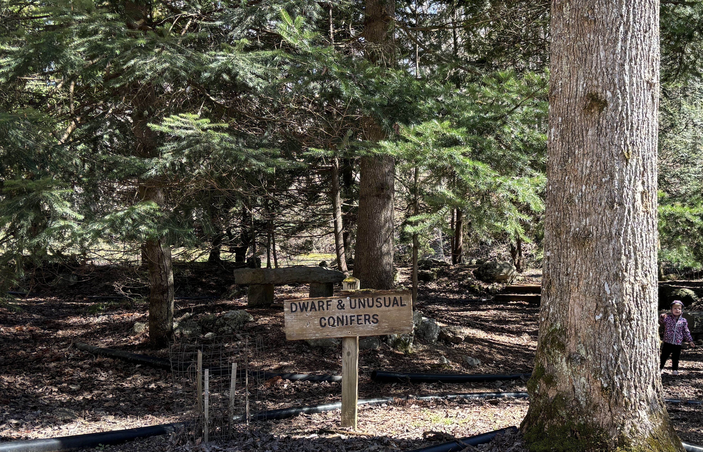
Directions to the Trailhead
| Trailhead Address | University of Tennessee Arboretum, 901 S Illinois Ave, Oak Ridge, TN 37830 |
|---|---|
| Trailhead GPS Coordinates | 35.99392, -84.21988 |
The trailhead is easy to find with the above address. Park in the large parking lot for the University of Tennessee Arboretum look for the road connected to it, and headed straight away from the parking area. The small stop sign that says “Authorized Vehicles Only” is at the start of this hike.
Trail Description
| Distance from Start | Description |
|---|---|
| 0.0 | Walk along the paved road. |
| 0.1 | Start of the Oak-Hickory Trail on the right. |
| 0.2 | Start of the Heath Cove Trail on the left. This is a shortcut if you’re looking for one! |
| 0.3 | Wind around, still on the road. |
| 0.5 | Shelter on the right. |
| 0.6 | Auditorium on the right. |
| 0.7 | Leave the paved road for a short dirt path called Evans Way Trail. Alternatively, turn around and head back on the paved path (or continue along many nearby trails! |
| 0.9 | Traihead. |

Nearby
- Exploring the many other trails nearby. The trail we featured meanders through a very small section of a large, diverse park. The Nature Book Trail is a great trail to add on to your hike. There are many others; check out the map at the UT Arboretum website (https://utarboretum.tennessee.edu/) to learn more.
- Stopping by Haw Ridge and its kids’ pump track. Nearby Haw Ridge Park features the Dirtlab Mountain Bike Skill Park, a great spot for kids riding strider and pedal bikes to hone their skills and build confidence.
Trail 6: Knox-Blount Greenway
Key Characteristics
| Trail Name | Knox-Blount Greenway |
|---|---|
| Region | Knoxville and Surroundings |
| Trail # | 6 |
| Time Estimate - Hiking Fast | 45 minutes |
| Time Estimate - Hiking Slowly | 1.5 hours |
| Trail Distance (Miles) | 2.3 |
| Elevation Change | Gentle |
| Pets | Allowed on leash |
| Parking Pass/Entrance Fee | Not Required |
| Restroom(s) | No |
| Terrain | Paved |
Overview
Another hike that is very close to city center Knoxville, the Knox-Blount Greenway is a fun, easier outing for little walkers and for parents pushing little ones in strollers. Paved throughout, this trail offers a glimpse of the surprising beauty of the Tennessee River so close to the city. Our description features a route that heads to the north, toward the city, and then back to the trail from the research park further south before returning to the start; of course, you can hike any way you like! Look for blue herons and other birds along the side of the river; you might see a Bald Eagle! Limited shade makes this a great outing for clear but cold winter days but a hot hike during warmer, sunnier times. This will be a fun hike for a gaggle of kids looking to toddle or run wild!
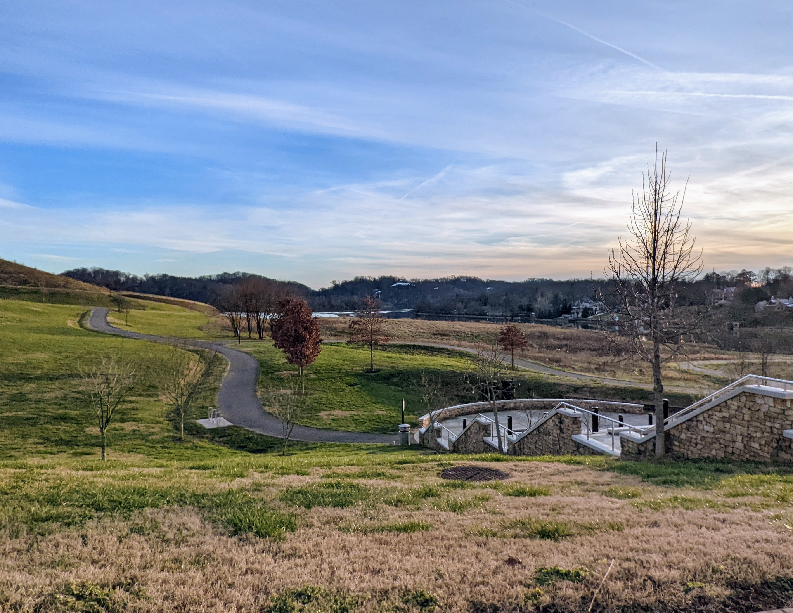
Directions to the Trailhead
| Trailhead Address | University of Tennessee Research Park at Cherokee Farm, 2641 Osprey Vista Way, Knoxville, TN 37920 |
|---|---|
| Trailhead GPS Coordinates | 35.94191, -83.95270 |
Park in the lot at the above address—if helpful, the building is the “IAM Electron Microscopy Facility”! The start of the trail is at the top of a terraced amphitheater — conveniently, one that’s easy to walk down.
Trail Description
| Distance from Start | Description |
|---|---|
| 0.0 | Walk down the terraced amphitheater. |
| 0.1 | Begin to descend down a gradual hill. |
| 0.3 | Reach the river and the Knox-Blount Greenway trail proper. Our route turns right, but you can explore in either direction! |
| 0.35 | Follow the greenway along the river. The meadows to the right are usually mowed; kids may like to cruise through them! |
| 0.8 | Our preferred route turns around at the intersection of the greenway and a spur trail. Of course, you can continue further if you like. Head back the other direction |
| 1.3 | Pass the trail from the amphitheater you took earlier, continuing along the river. |
| 1.65 | Turn around at the intersection of another spur trail—or, again, continue further. |
| 2.0 | Meet back up with the trail to the amphitheater. |
| 2.3 | Traihead. |
Nearby
- Visiting the UT Gardens. The nearby UT Gardens (2621 Morgan Circle, Knoxville, TN 37996) is a great spot for a meander through beautiful gardens. Be sure to check out the Children’s Garden featuring grassy moguls kids love to roll or hop down.
- Biking the greenways. While we featured the Knox-Blount Greenway as a hike, it’s also a fun bike ride for young bikers.
Trail 7: Sequoyah Park
Key Characteristics
| Trail Name | Sequoyah Park |
|---|---|
| Region | Knoxville and Surroundings |
| Trail # | 7 |
| Time Estimate - Hiking Fast | 1 hour |
| Time Estimate - Hiking Slowly | 2 hours |
| Trail Distance (Miles) | 2.1 |
| Elevation Change | Flat |
| Pets | Allowed on leash |
| Parking Pass/Entrance Fee | Not Required |
| Restroom(s) | Yes |
| Terrain | Dirt path; grass; gravel path |
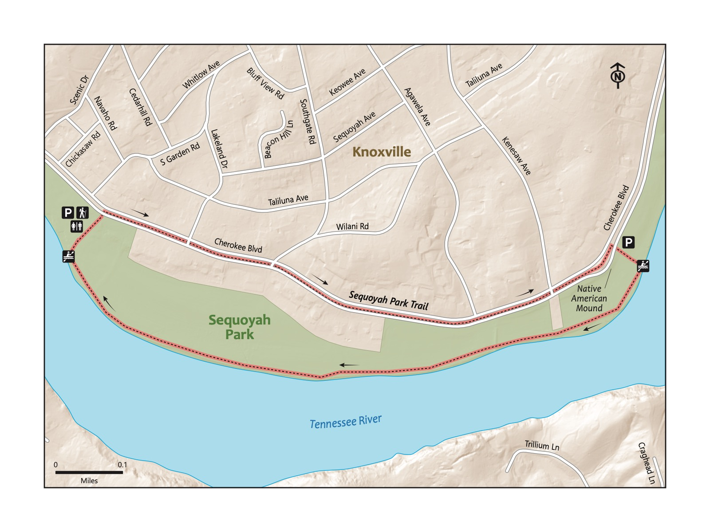
Overview
Another gem among Knoxville city parks. The trail starts at a large parking area near the restroom building and walks towards the river. It follows the river past open fields, trees, and bushes that are practically impossible for kids not to explore. The trail cuts up toward the greenway and hikes past Indian burial mounds and the old (many large) houses along the path before returning to the start. In mild weather, it is a fantastic spot to hang up a hammock, go fish, have a picnic, or toss a frisbee or a football. Good for kids of all walking ages; alternate ways to access the greenway make it easy to create a shorter loop.
Directions to the Trailhead
| Trailhead Address | Sequoyah Park Restrooms, W2HG+M9, Knoxville, TN 37919 |
|---|---|
| Trailhead GPS Coordinates | 35.92932, -83.97398 |
The above address takes you to the restrooms that serve as a landmark for this sprawling park. Please note that the address uses a “Plus” code that only works with Google Maps because the restrooms and trailhead don’t have an assigned address.
Park in the large parking area and head toward the river and the large Elm tree with the steel wire around it. The trail begins there along the river.
Trail Description
| Distance from Start | Description |
|---|---|
| 0.0 | Walk southwest (toward the large, open part of the park) along the river. |
| 0.1 | Kayak and canoe put in spot on the right. |
| 0.25 | Enter a wooded section.. |
| 0.4 | Bench. |
| 0.65 | Distinctive, dome-shaded trees that kids can crawl into, between, and through. |
| 0.9 | Small rocky hill to walk over (you can walk around it on the greenway, but kids may enjoy scrambling up it). |
| 1.1 | Boat launch. Head up beside or through the parking lot to Sequoyak Greenway in the center of Cherokee Blvd. Turn left onto the greenway. |
| 1.2 | Indian burial mound. Note the historical marker. Walk along past the homes on both sides of the greenway. |
| 2.05 | Traihead. |
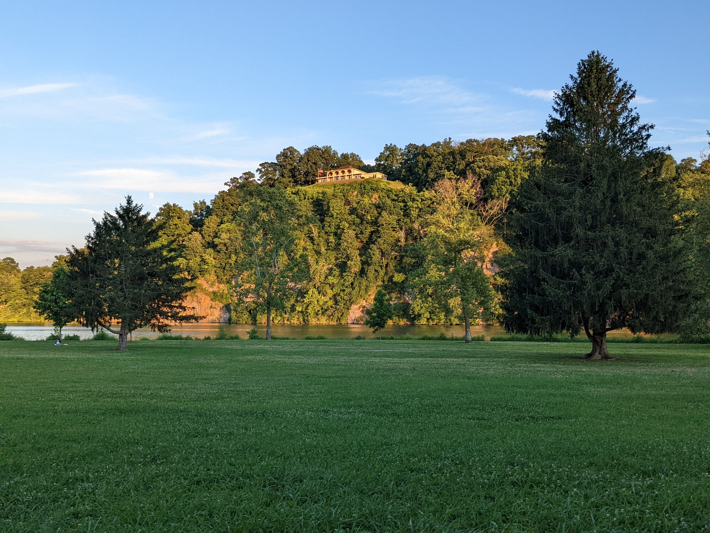
Nearby
- Grabbing a great cup of coffee — or breakfast. Nearby Treetop Coffee Shop (1206 Kenesaw Ave, Knoxville, TN 37919) and The Plaid Apron restaurant (1210 Kenesaw Ave, Knoxville, TN 37919) next door are great places to stop by.
- Playing at a nearby playground. Nearby Whitlow Park (4228 Whitlow Ave SW, Knoxville, TN 37919) features a small but fun playground, nice tennis courts, and a basketball court.
Trail 8: Ijams Crag
Key Characteristics
| Trail Name | Ijams Crag |
|---|---|
| Region | Knoxville and Surroundings |
| Trail # | 8 |
| Time Estimate - Hiking Fast | 45 minutes |
| Time Estimate - Hiking Slowly | 1.5 hours |
| Trail Distance (Miles) | 1.5 |
| Elevation Change | Moderate |
| Pets | Allowed on leash |
| Parking Pass/Entrance Fee | Not Required |
| Restroom(s) | Yes |
| Terrain | Dirt path; rocky path |
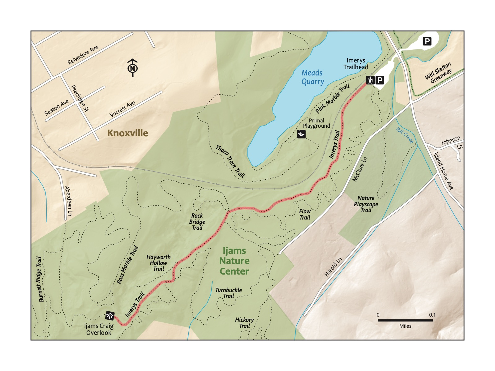
Overview
This trail is a nice introduction to the half of Ijams that is centered around Mead’s Quarry – what Ijams refers to as the Quarryside area The hike begins at the quarry and winds up a smooth – then rocky – trail. The overlook is for Ijams Crag, a popular outdoor rock climbing area. We love having a snack at the shade of the pine trees at the overlook. After winding back to the start, be sure to explore one of the two excellent nature play areas nearby or take a side trail back to extend the trip. It is hikable by older kids due to the rockiness and steepness; younger kids may need a carry.
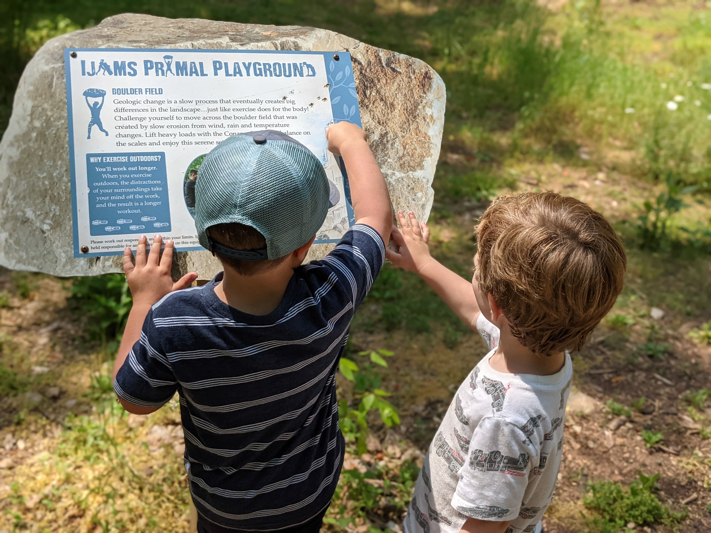
Directions to the Trailhead
| Trailhead Address | Meads Quarry, 3526 Island Home Ave, Knoxville, TN 37920 |
|---|---|
| Trailhead GPS Coordinates | 35.95174, -83.86587 |
Park in the parking lot for Meads Quarry using the above address. The trail begins alongside the disused railroad tracks; look for a sign for Imery’s.
Trail Description
| Distance from Start | Description |
|---|---|
| 0.0 | Start on Imery’s trail, heading away from the parking lot. |
| 0.15 | Gradually, then more steeply. begin to ascend. |
| 0.30 | Trail levels out at an intersection between Imery’s Trail, Rock Bridge Trail, and Gravel Road Trail. |
| 0.5 | Rocky and steep. |
| 0.75 | Reach the overlook to Ijams Quarry. Rest up, and then turn around to head back — or continue farther along on Imery’s! |
| 1.50 | Traihead. |
Nearby
- Stopping by the Ijams Visitor Center. Check out the Ijams River and Tower loop for an introduction to this other area of the Ijams Nature Center.
- Playing at the Ijams Nature Playscape. An amazing and surprising part of Ijams, worthy of a visit on its own. Tucked away a bit on the side of the parking area at Mead’s Quarry. It’s a favorite for kids, with a treehouse, tightrope, stumps for jumping, and—yes—a mud pit!
- Playing at the Ijams Primal playground. Also nearby, smaller than the Nature Playground, but packed with features for climbing and jumping.
Trail 9: William Hastie
Key Characteristics
| Trail Name | William Hastie |
|---|---|
| Region | Knoxville and Surroundings |
| Trail # | 9 |
| Time Estimate - Hiking Fast | 0.5 hours |
| Time Estimate - Hiking Slowly | 1 hour |
| Trail Distance (Miles) | 1.3 |
| Elevation Change | Flat |
| Pets | Allowed on leash |
| Parking Pass/Entrance Fee | Not Required |
| Restroom(s) | No |
| Terrain | Gravel path |
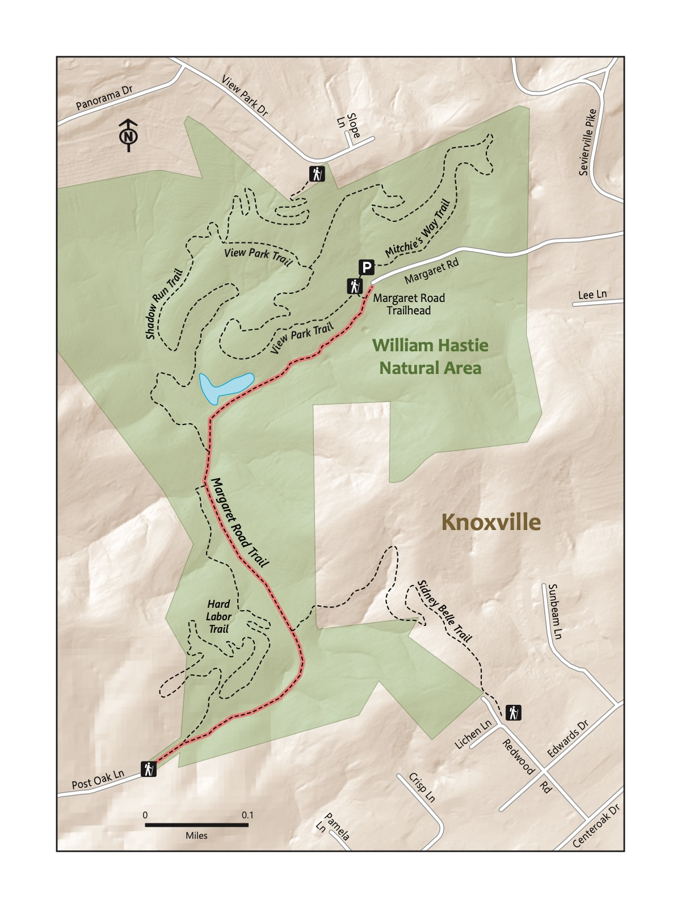
Overview
A short walk on a gravel path through deep woods. The start features a beginner’s mountain bike loop on a smooth path; consider bringing kids’ bikes. Though short, this hike takes you by many spur trails; consider this a gentle introduction to a trail system close to but more rustic than Ijams. Good for all toddling and walking kids and their families.

Directions to the Trailhead
| Trailhead Address | William Hastie Natural Area, 1302 Margaret Rd, Knoxville, TN 37920 |
|---|---|
| Trailhead GPS Coordinates | 35.93464, -83.87455 |
The above address will direct you to a large, rarely-busy parking area and a nice trailhead with a picnic area. Several trails start from this trailhead. Look for a sign for the Margaret Road Trail.
Trail Description
| Distance from Start | Description |
|---|---|
| 0.0 | Start on the Margaret Road Trail. |
| 0.2 | Small pond on the right. Look for turtles! |
| 0.25 | Shadow Run Trail on the right. |
| 0.65 | Reach the Post Oak Ln. Trailhead and turn around. |
| 1.30 | Traihead. |
Nearby
- Biking on the kids’ loop. The “green” mountain biking trail, Springarn, is a great spot for kids to begin to learn to ride on trails. It’s only 0.6 miles and is a nice complement to this hike.
- Exploring some of the many other trails. William Hastie Natural Area features a ton of other trails. Consider taking Mitchie’s Way from near the parking area — and then looping back to Margaret Road and the start on the trail of your choice.
Trail 10: Sharp’s Ridge
Key Characteristics
| Trail Name | Sharp’s Ridge Overlook |
|---|---|
| Region | Knoxville and Surroundings |
| Trail # | 10 |
| Time Estimate - Hiking Fast | 1.5 hours |
| Time Estimate - Hiking Slowly | 2.5 hours |
| Trail Distance (Miles) | 2.3 |
| Elevation Change | Moderate |
| Pets | Allowed on leash |
| Parking Pass/Entrance Fee | Not Required |
| Restroom(s) | No |
| Terrain | Dirt path; road |
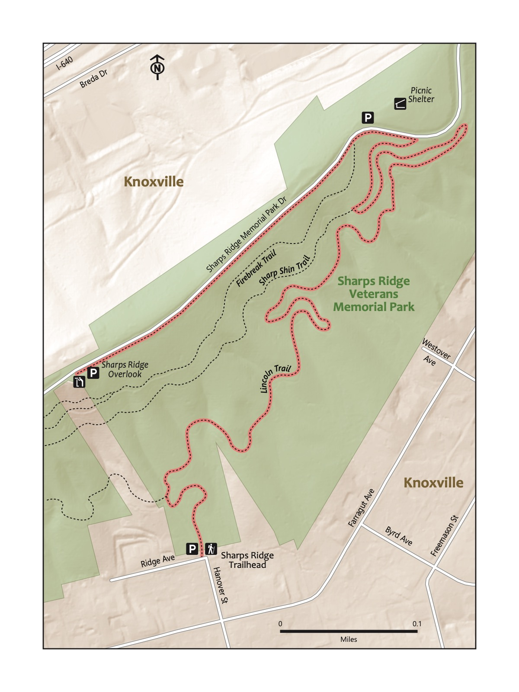
Overview
A hike that starts very close to the city center of Knoxville – just north. Wind up from the trailhead on a smooth path through the pretty forest. When we think of this trail, we think of little ones toddling or running ahead around the bends in the trail, just far enough to be out of sight for a little bit until we catch up! Connect to the road and – optionally – walk up to an overlook from which the Smokies are visible. A short but sweet family hike that’s close to many amenities. Best for older kids or younger kids who are carried.
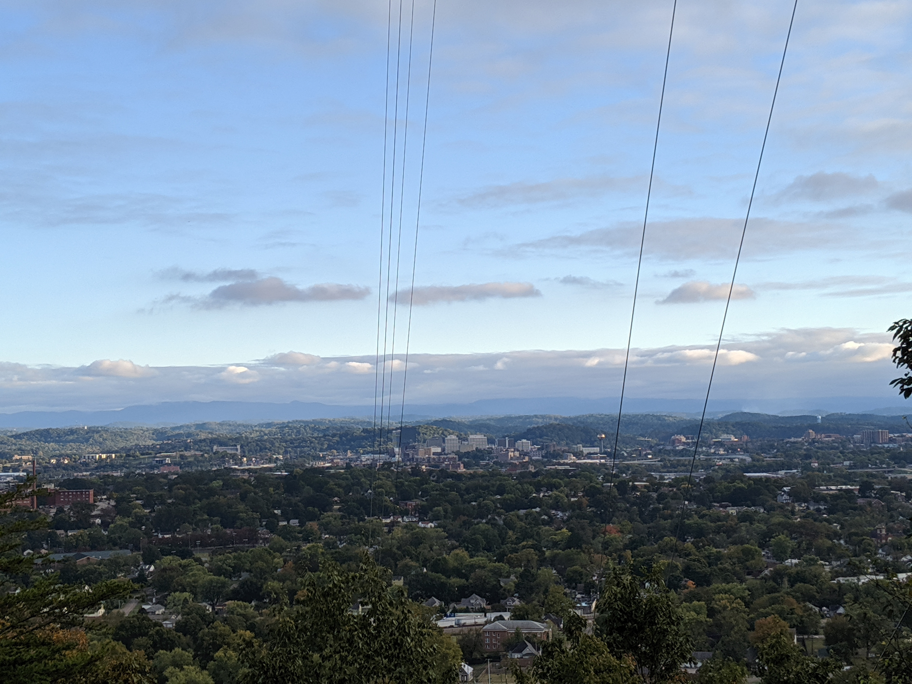
Directions to the Trailhead
| Trailhead Address | Sharps Ridge Trailhead, 599-501 Ridge Ave, Knoxville, TN 37917 |
|---|---|
| Trailhead GPS Coordinates | 36.00344, -83.93787 |
The trailhead can be just a little tricky to find—partially because Google Maps has several trailheads with the same name! We once met friends at different Sharps Ridge Trailheads! Consider putting in the address (above) to find the trailhead, which is at the end of Hanover St. Park in one of the parking spots or the gravel area on the side of Ridge Ave.
Trail Description
| Distance from Start | Description |
|---|---|
| 0.0 | Start by walking through the Arbor, past the handy trail map of the Sharps Ridge area. You’re technically on the very short Hanover Access trail. |
| 0.1 | Turn right onto Lincoln Trail. Wind up through the deep woods and easy curves in the trail. |
| 0.8 | Turn right onto Sharp Shin. |
| 0.9 | Meet Sharps Ridge Memorial Park Drive, a road. Turn left to walk along the side of the road toward the overlook — or, alternatively, head back to the start! |
| 1.15 | Overlook. See if you can spy the Sunsphere, Neyland Stadium, and the Smokies in the distance. Turn around to head back the way you came. |
| 1.4 | Turn right, back onto Sharp Shin. |
| 1.5 | Turn left onto Lincoln Trail. |
| 2.2 | Turn left onto the Hanover Access Trail. |
| 2.3 | Traihead. |
Nearby
- Stopping at nearby restaurants and shops. Favorite nearby spots include the fantastic Wild Love Bakehouse (1625 N Central St, Knoxville, TN 37917), the quick, inexpensive, tasty Taqueria La Herradura (2625 N Broadway, Knoxville, TN 37917), and Hard Knox Pizza Central (2300 N Central St, Knoxville, TN 37917).
- Hiking further or on other trails. Sharp’s Ridge includes tons of other trails. A favorite starts at a different—but nearby—parking area, immediately behind the Cherry Creek Apartments (navigate to 3404 Dill St, Knoxville, TN 37917). We like the Lincoln Trail, which is an accessible mountain bike trail.
Trail 11: Norris Dam
Key Characteristics
| Trail Name | Songbird Loop |
|---|---|
| Region | Knoxville and Surroundings |
| Trail # | 11 |
| Time Estimate - Hiking Fast | 1.5 hours |
| Time Estimate - Hiking Slowly | 2.5 hours |
| Trail Distance (Miles) | 2.3 |
| Elevation Change | Gentle |
| Pets | Allowed on leash |
| Parking Pass/Entrance Fee | Not Required |
| Restroom(s) | No |
| Terrain | Gravel path |
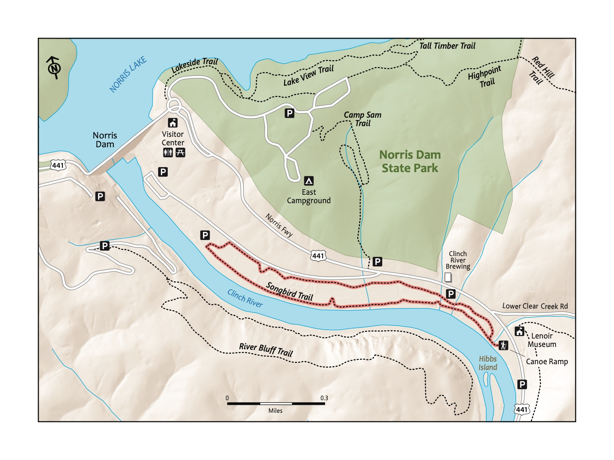
Overview
Part of Norris Dam State Park, around thirty minutes north of Knoxville on the pretty Norris Lake. This hike is one of the flattest we feature. Further, it’s on a graded gravel path. Like the Knox-Blount Greenway along the Tennessee River, you may be surprised by the variety and quantity of wildlife you see along this scenic river, the Clinch. A relaxing trail for a family outing that might end with a drive over Norris Dam or a stop for a bite and a drink at the nearby Clinch River Brewery. This hike would be a fun challenge for the toddler ready to hike a bit farther.
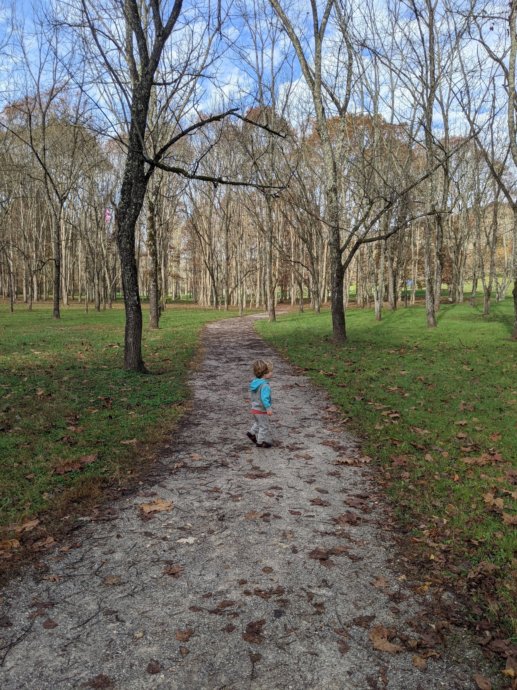
Directions to the Trailhead
| railhead Address | Canoe Ramp by the Songbird Loop, 6W6G+R7 Rocky Top, Tennessee |
|---|---|
| Trailhead GPS Coordinates | 36.21210, -84.07397 |
There are several possible trailheads, all easy to access. We chose to start this hike from a put in spot for kayaks and canoes. In Google Maps, you can search the above address. Please note it uses a “Plus code” instead of a street address, as the canoe ramp does not have an address. This is immediately off Norris Fwy. (Highway 441) — curiously, the same highway that bisects the Smokies. Park in the large parking lot and head toward the river.
Trail Description
| Distance from Start | Description |
|---|---|
| 0.0 | Start by crossing a short bridge over Clear Creek. |
| 0.05 | Turn right to start the loop in a counterclockwise fashion (of course, you can hike the other way, too!). |
| 0.3 | Short bridge. |
| 1.0 | Turn left, toward the river, remaining on the same trail. |
| 1.05 | Follow the trail back along the river. |
| 2.3 | Trailhead. |
Nearby
- Stopping by the Clinch River Brewery. Clinch River Brewing (2045 Norris Fwy, Norris, TN 37828) is not within the boundaries of the Norris Dam State Park—but it’s very close to the trailhead and is a fun place to stop for lunch or dinner before or after a hike.
- Checking out Norris Dam. Stop at the TVA Norris Dam Visitor Center on the same side of the Clinch River as this hike — or drive across and back over the dam for an impressive—and a bit of an otherworldly—view and experience.
Trail 12: House Mountain
Key Characteristics
| Trail Name | House Mountain Overlook |
|---|---|
| Region | Knoxville and Surroundings |
| Trail # | 12 |
| Time Estimate - Hiking Fast | 2.5 hours |
| Time Estimate - Hiking Slowly | 4.5 hours |
| Trail Distance (Miles) | 2.5 |
| Elevation Change | Steep |
| Pets | Allowed on leash |
| Parking Pass/Entrance Fee | Not Required |
| Restroom(s) | No |
| Terrain | Dirt path; rocky path |
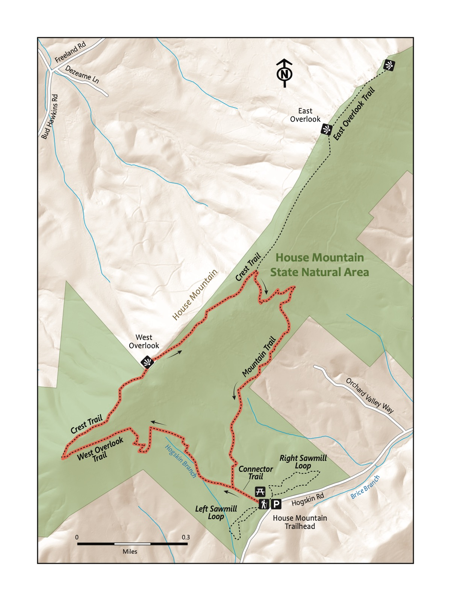
Overview
The highest point in Knox County (but far from the highest in the book), this trail feels like it belongs in another section of the book. The elevation gain is substantial, and the trail is rockier and rougher than the others close to Knoxville. This one always challenges us! But, the flip side is that House Mountain offers a challenging hike to a rewarding overlook far nearer to Knoxville than those in the Cumberland Plateau or the Great Smoky Mountains National Park. The trail climbs up House Mountain from the west, reaching the West Overlook before heading down to complete the clockwise loop (you’re free to hike it in the opposite direction). Good for older kids or families able to carry a little one a farther distance.
[Credit to Hanhui Bao][/img/trail-12-figure-01.jpg]
Directions to the Trailhead
| Trailhead Address | House Mountain Parking and Trailhead, 463P+WV Corryton, Tennessee |
|---|---|
| Trailhead GPS Coordinates | 36.10483, -83.76276 |
The trailhead is straightforward to locate and access. Park at the large parking area and look for the large covered picnic area. Look for the Connector Trail near the picnic area to begin the hike.
Trail Description
| Distance from Start | Description |
|---|---|
| 0.0 | Start on the Connector Trail. |
| 0.1 | Turn left onto the West Overlook Trail. Begin to climb up the mountain. |
| 0.85 | Rocky prominence. The trail changes here to the Crest Trail. Trail flattens from here. |
| 1.25 | Reach the West Overlook. Continue on the Crest Trail — or, optionally, this is a suitable turn-around spot. |
| 1.6 | Intersection with the East Overlook Trail. Turn right. |
| 1.7 | Steep descent. |
| 2.0 | Trail levels out, and the descent becomes more gradual and winding. |
| 2.3 | Trailhead. |
Nearby
- Visiting Zoo Knoxville on the way home. Zoo Knoxville (3500 Knoxville Zoo Dr, Knoxville, TN 37914) is accessible from I-40, on the way to House Mountain for those traveling from Knoxville or west of the city center. It’s a fantastic place to spend half of a day (or longer).
The Cumberland Plateau is a wild place! In some ways (its remoteness and the fewer visitors most of its areas see), it feels more wild than the Great Smoky Mountains National Park. We were surprised to learn that there even is a Cumberland Plateau - more or less to the west and north of Knoxville. It’s both a plateau and—particularly to the north—a mountainous region, especially Frozen Head State Park. Its defining characteristic is its geology: incredible rock features that result principally from fast-eroding sandstone. You’ll see rock formations large and (striking) large on all of your hikes in the plateau; some of these may amaze you that they are in East Tennessee. These hikes are some of the most special to us in this book; a little off-the-radar and even underappreciated, part of our motivation for writing this book was to draw attention to these hidden gems.
Introduction
Trail 13: Emory Falls
Key Characteristics
| Trail Name | Emory Falls |
|---|---|
| Region | Cumberland Plateau |
| Trail # | 13 |
| Time Estimate - Hiking Fast | 2 hours |
| Time Estimate - Hiking Slowly | 3.5 hours |
| Trail Distance (Miles) | 2.4 |
| Elevation Change | Moderate |
| Pets | Allowed on leash |
| Parking Pass/Entrance Fee | Not Required |
| Restroom(s) | No |
| Terrain | Dirt path; rocky path |
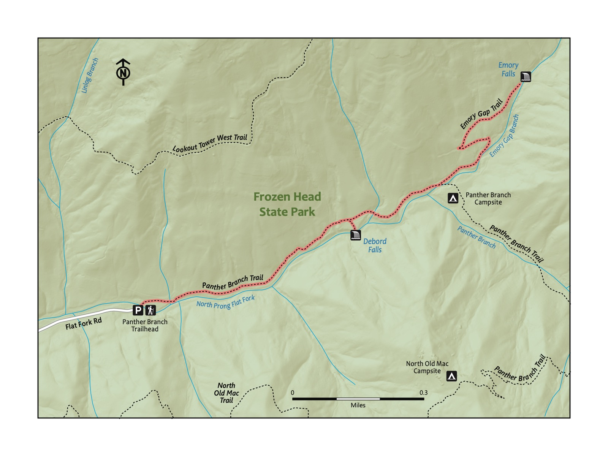
Overview
Writing about this trail makes us smile. In many ways, it’s the perfect kid hike! It starts at a beautiful trailhead along a pretty creek in the deep woods. It gradually climbs before stopping at a scenic waterfall, DeBord Falls—one of two, and a perfectly acceptable place to turn around with younger kids (we have many times). It continues further to Emory Falls before returning on a gradual slope back to the trailhead. Stop at the playground you passed on the way to the trailhead beside the same creek; the water is usually shallow enough to be perfect for splashing and rock hopping. Best for kids comfortable with rocky trails.

Directions to the Trailhead
| Trailhead Address | Emory Gap Trailhead, 4GP6+MV, Wartburg, TN 37887 |
|---|---|
| Trailhead GPS Coordinates | 36.13658, -84.48785 |
:—– |
Park in a spot at the Emory Gap Trailhead. Note that the above address uses a “Plus code” that will only work in Google Maps—because Emory Gap Trailhead does not have a street address. |
Trail Description
| Distance from Start | Description |
|---|---|
| 0.0 | Start by walking across the bridge at the trailhead. |
| 0.55 | DeBord Falls. Walk down the stairs on the right to view the waterfall from below. The trail continues along, but turn back if you like (we often do!). |
| 0.9 | Trail switchbacks. |
| 1.1 | Steep and rocky section at the end to the viewing spot for Emory Falls. |
| 1.2 | After viewing the waterfall, head back to the start! |
| 2.4 | Trailhead. |
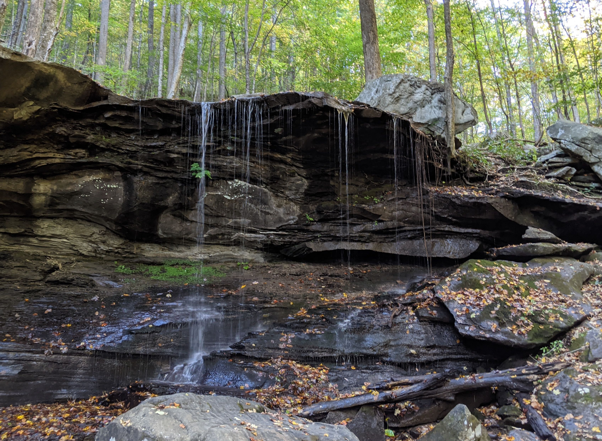
Nearby
- Playing at the playground. There is a fun, shaded creekside playground 0.7 miles down the road from the trailhead; most of the year, the creek is a perfect depth for safe splashing.
- Checking out the Flat Fork Story Book Trail. Starting near the playground, this short trail is great for the littlest hikers.
- Hiking to the Frozen Head Mountain Summit. A challenge for the biggest hikers—including adults! This hike is around strenuous seven miles to and back from the Lookout Tower at the summit of Frozen Head Mountain, from which views of the Smokies far in the distance can be faintly visible on clear days.
Trail 14: Obed Point
Key Characteristics
| Trail Name | Obed Point Trail |
|---|---|
| Region | Cumberland Plateau |
| Trail # | 14 |
| Time Estimate - Hiking Fast | 2.5 hours |
| Time Estimate - Hiking Slowly | 4.5 hours |
| Trail Distance (Miles) | 3.6 |
| Elevation Change | Gentle |
| Pets | Allowed on leash |
| Parking Pass/Entrance Fee | Not Required |
| Restroom(s) | Yes |
| Terrain | Dirt path |
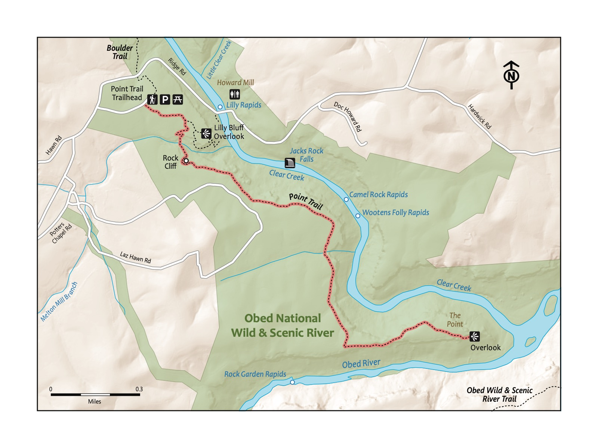
Overview
Just far enough to be off the radar of many in Knoxville, this trail has a bit of everything - fun bridge crossings, deep forest, waterfalls, and two pretty overlooks. It does not climb so much as to become tiresome, but it’s long enough to feel like a real adventure. There’s something about the Obed area that feels both wild and inviting. The only downside? It’s a little out-of-the-way; in some ways, this trail feels farther than some destinations in the Smokies. It’s worth it for a great family hike with kids of all ages. Though out of the way, there are a few fun things to do to extend the hike or to visit very nearby on the way home. Great for kids of all hiking ages, and not a bad hike on which to carry a little one.
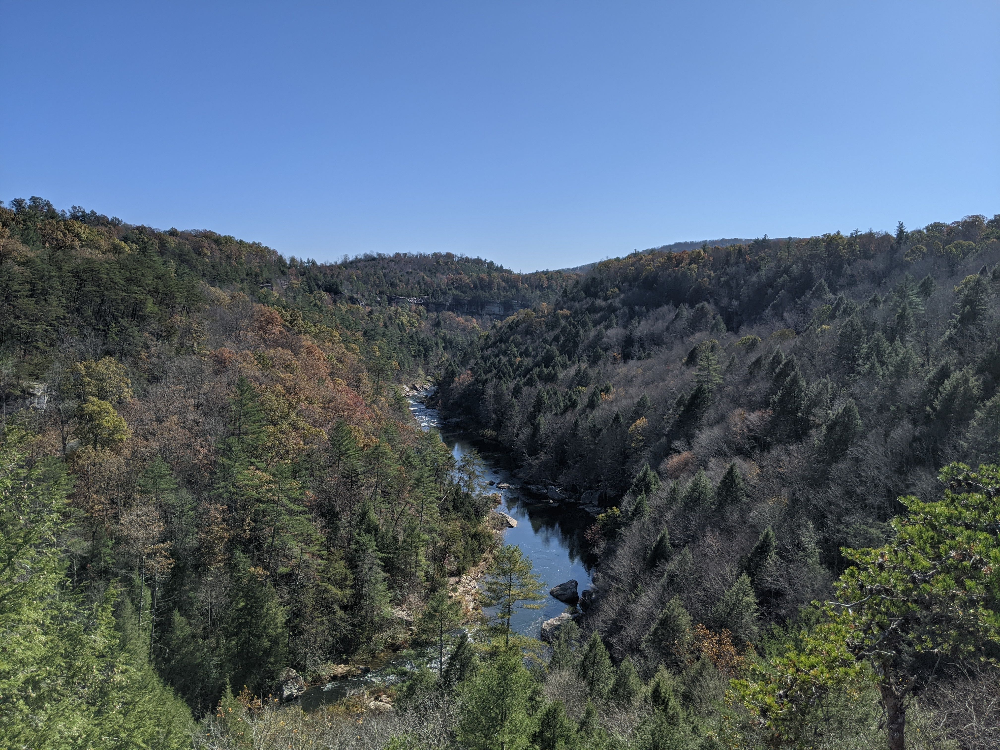
Directions to the Trailhead
| Trailhead Address | Lilly Bluff Trailhead, 1 Lilly Bluff Trail Head, Lancing, TN 37770 |
|---|---|
| Trailhead GPS Coordinates | 36.10239, -84.72183 |
The above address should easily navigate you to the large parking area with a restroom. Look for the sign for the point trail.
Trail Description
| Distance from Start | Description |
|---|---|
| 0.0 | Start on the Point Trail. |
| 0.15 | Side trial to the Lilly Bluff Overlook for Clear Freek — absolutely worth the short trip! |
| 0.4 | Small bridge crossing. |
| 0.45 | Large boulders and a rock wall — the trail winds around the side and atop the back of the wall. |
| 0.5 | Trail flattens and winds along the side of a ridge. |
| 1 | Trail bends to the right. |
| 1.4 | Trail bends to the left. |
| 1.8 | Overlook of the juncture of Clear Creek and Obed River. There isn’t really one overlook, per se, but many great spots to view the rivers! After a good rest, turn around and head back to the trailjhead. |
| 3.6 | Trailhead. |
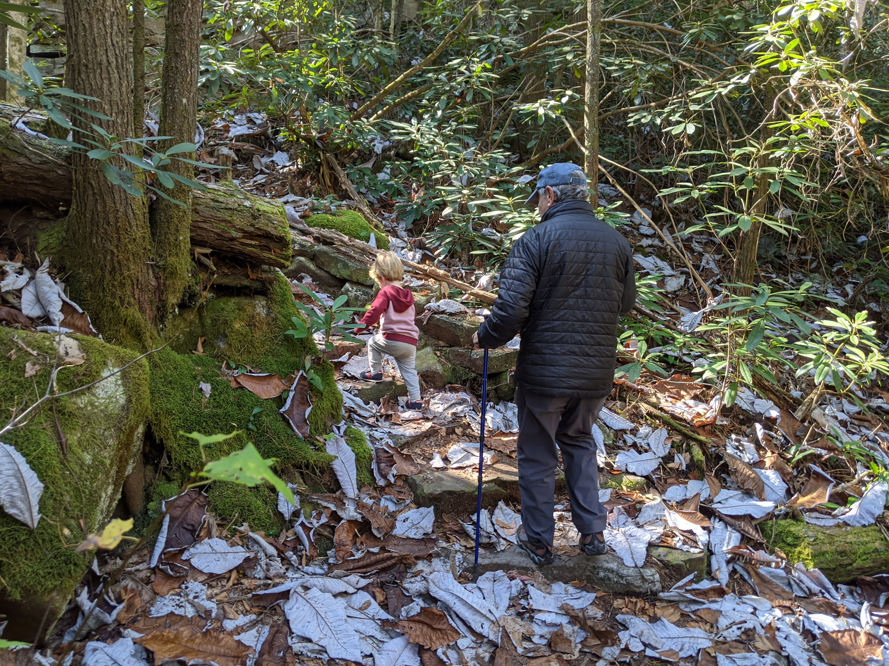
Nearby
- Hanging out at Lilly Pad Hopyard Brewery. Befitting the Obed Wild & Scenic Area, the Lilly Pad Hopyard Brewery (https://www.lillypadhopyardbrewery.com) is a surprising, fantastic, kid-friendly destination. Stop by for food and drinks—only on Saturday and Sunday from 12-6 pm.
- Playing around the bouldering area. The Trailhead features a nearby shaded area full of boulders. While we’ve often used this spot as a peaceful place to finish kiddo naps, older kids love trying to climb the boulders.
Trail 15: Bandy Creek
Key Characteristics
| Trail Name | Bandy Creek |
|---|---|
| Region | Cumberland Plateau |
| Trail # | 15 |
| Time Estimate - Hiking Fast | 45 minutes |
| Time Estimate - Hiking Slowly | 1 hour, 15 minutes |
| Trail Distance (Miles) | 1.3 |
| Elevation Change | Flat |
| Pets | Allowed on leash |
| Parking Pass/Entrance Fee | Not Required |
| Restroom(s) | Yes |
| Terrain | Dirt path |
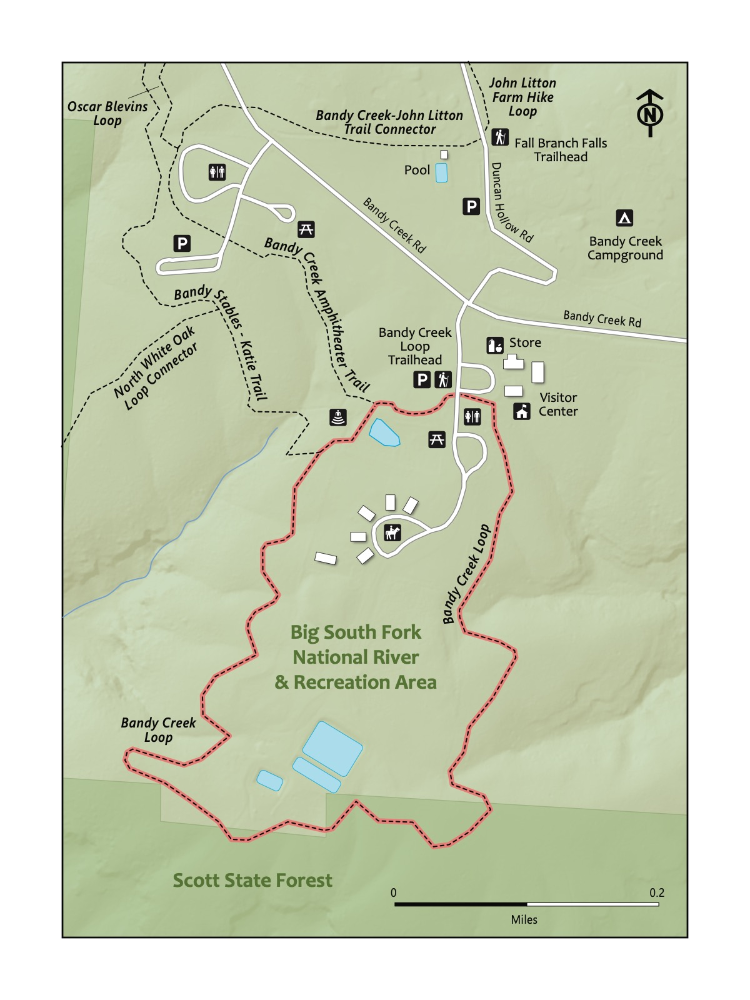
Overview
A welcoming, gentle introduction to the Big South Fork. Best if you’re staying at the campground – or if you’re hiking the nearby Angel Falls Trail or the Fall Branch Falls trails. Starts at the visitor center. This happens to be the flattest trail in the book, and it’s a short trail, but it’s almost entirely on a dirt path. This is a great hike for toddlers or little kids, and it is good for carried infants.
[PLACEHOLDER - CHANGE][/img/trail-15-figure-01-placeholder-dont-use.png]
Directions to the Trailhead
| Trailhead Address | Bandy Creek Visitors Center, 151 Stable Rd, Oneida, TN 37841 |
|---|---|
| Trailhead GPS Coordinates | 36.49062, -84.69777 |
The trailhead address will navigate you to the nearby Visitors Center (worth a visit when open—9:00 am - 5:00 pm year-round!). From the Visitors Center, look for the signs for the Bandy Creek Loop to begin the hike.
Trail Description
| Distance from Start | Description |
|---|---|
| 0.0 | Start on the Bandy Loop Trail. Wind gradually toward the horse stables. |
| 0.15 | Pass the horse stables on the right. There’s an easy connector trail to them nearer the end of the loop. |
| 1.15 | Connector trail to the horse stables. |
| 1.3 | Return to the parking area and trailhead. |
Nearby
- Visiting the horse stables. Kids will likely love the nearby stables that often house many horses —most from guests at the campground who will ride the trails that allow horses. The nearby Bandy Creek Loop trail is also a good, short hike for young kiddos.
- Camping at Bandy Creek. This is a large, modern, scenic campground, very much worth a visit, though it is off-the-radar of many. You can almost always find a spot here — even on holiday weekends.
- Hiking the Fall Branch Falls or Angel Falls trails. See those chapters for more details.
Trail 16: Fall Branch Falls
Key Characteristics
| Trail Name | Fall Branch Falls |
|---|---|
| Region | Cumberland Plateau |
| Trail # | 15 |
| Time Estimate - Hiking Fast | 2.5 hours |
| Time Estimate - Hiking Slowly | 4.5 hours |
| Trail Distance (Miles) | 3.7 |
| Elevation Change | Moderate |
| Pets | Allowed on leash |
| Parking Pass/Entrance Fee | Not Required |
| Restroom(s) | Yes |
| Terrain | Dirt path; ladders; rocky path |
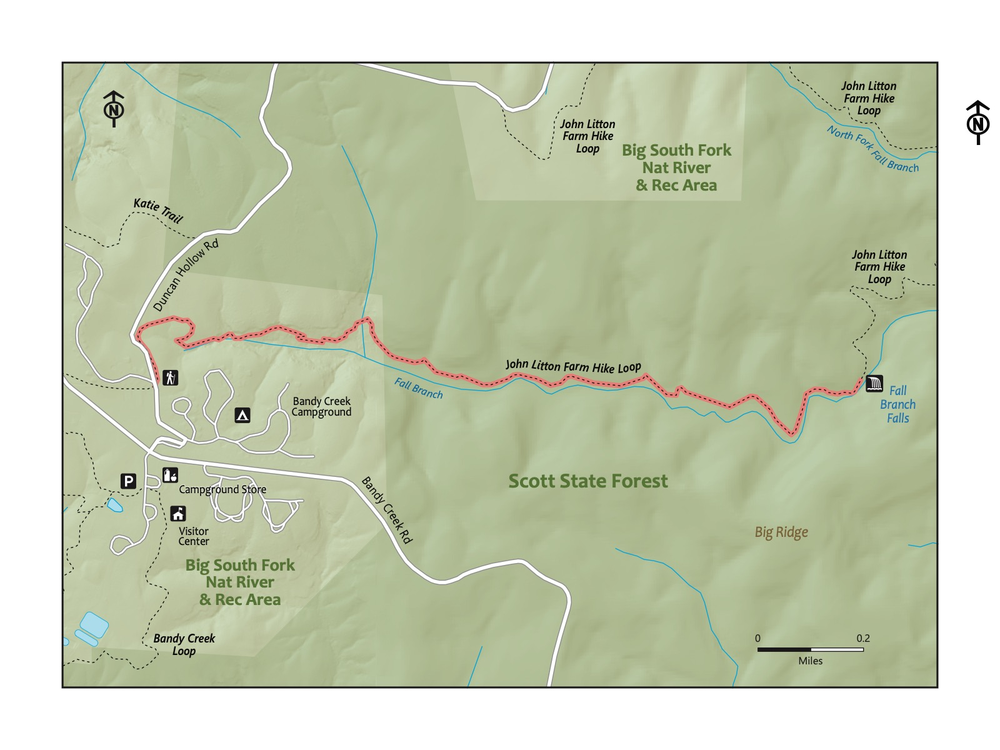
Overview
Part of the Big South Fork National River and Recreation Area, a National Park Service-administered area that is a perfect counterbalance to the wonderful but far more familiar Great Smoky Mountains National Park. This hike, like the Big South Fork, is quieter and subtler than the Smokies. It features unique rock cliffs that are perfect for kids to ogle and explore. The visitor center, horse stables—not to mention 100s of miles of nearby trails, complement the hike. Because you can turn around at any point, suitable for kids of any ages. Just be aware of the ladders that can be a little tricky for the youngest kids to navigate!
[Credit to VioletSkyAdventures (photo 2487905531 on Shutterstock)][/img/trail-16-figure-01.jpg]
Directions to the Trailhead
| Trailhead Address | Bandy Creek Visitors Center, 151 Stable Rd, Oneida, TN 37841 |
|---|---|
| Trailhead GPS Coordinates | 36.49062, -84.69777 |
The trailhead address will navigate you to the nearby Visitors Center (worth a visit when open—9:00 am - 5:00 pm year-round!). From the Visitors Center, walk across Bandy Loop Road toward the campground. Find Duncan Hollow Road, and walk up it a short distance, passing the Bandy Creek Pool (at which you could also park) on the left. The trailhead is immediately past the pool on the right side of Duncan Hollow Road.
Trail Description
| Distance from Start | Description |
|---|---|
| 0.0 | Start on the Litten-Slaven Farm Loop Trail. |
| 0.2 | Begin to gradually descend into the Fall Branch creekbed. |
| 0.5 | Trail levels. |
| 0.55 | Rocky section featuring a short ladder (to make it easier to navigate through the rocks). |
| 1.8 | Fall Branch Falls. A great spot for a break before turning around to return to the start. |
| 3.6 | Trailhead. |
Nearby
- Camping at Bandy Creek! The Bandy Creek Campground is a gem - spacious sites, nice restrooms, and lots of cul-de-sacs for kids to endlessly play or bike. Consider a stay here as a launching point for this hike.
- Stopping by the visitor’s center. A good place to learn more about the Big South Fork—and to ask any questions or to seek the advice of park rangers.
- Hiking the nearby Bandy Creek or Angel Falls Trails. Check out the Bandy Creek or Angel Falls Trails chapters. Note there are 100s of miles of other trails in this area, many well worth a hike (the Grand Gap Loop is a lengthy favorite!). Consider stopping the the visitor center to ask for recommendations and up-to-date information.
Trail 17: Twin Arches
Key Characteristics
| Trail Name | Twin Arches Loop |
|---|---|
| Region | Cumberland Plateau |
| Trail # | 16 |
| Time Estimate - Hiking Fast | 1.5 hour |
| Time Estimate - Hiking Slowly | 2.5 hours |
| Trail Distance (Miles) | 1.2 |
| Elevation Change | Moderate |
| Pets | Allowed on leash |
| Parking Pass/Entrance Fee | Not Required |
| Restroom(s) | Yes |
| Terrain | Dirt path; stairs |
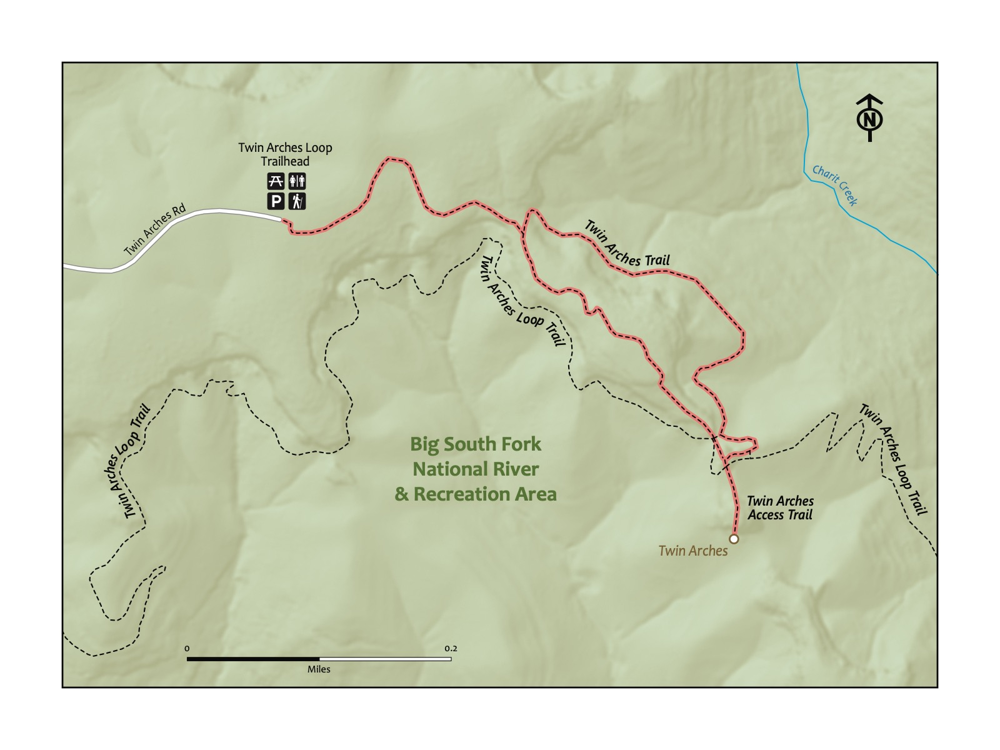
Overview
This short hike leads to one of the most surprising geologic features in Tennessee—the Twin Arches, a 130-foot span and 100-foot height feature you can walk over, around, and through. The surrounding forest is not shabby, either. This is a fantastic and memorable family hike, with some challenges sprinkled in. First, this hike is the farthest (by driving distance) of any in this book. Second, there are some rocky sections that require some carefulness. Still, this is a must-see, and it’s near many features (and places to camp) to make a visit more accommodating. Good for families with children of any walking age.

Directions to the Trailhead
| Trailhead Address | Twin Arches Trailhead, G7V5+Q7 Jamestown, Tennessee |
|---|---|
| Trailhead GPS Coordinates | 36.48797, -84.69744 |
The above address should easily navigate you to the large parking area with a restroom. Note that the above address uses a Google Maps “Plus code”, as the trailhead does not have a street address. This will only work in Google Maps.
Park, and look for the sign for the Twin Arches trail near the back of the parking lot.
Trail Description
| Distance from Start | Description |
|---|---|
| 0.0 | Start on the Twin Arches trail. |
| 0.25 | Intersection. Head right to complete the loop in a counterclockwise section (though, it is perfectly fine to head in the other direction!). |
| 0.3 | Stairs. |
| 0.5 | Arrive at the base of the Twin Arches. Head straight - you won’t be able to miss them! |
| 0.6 | Twin Arches. Walk along the top of the arches, under them, and around them, and then head back toward the loop portion of the trail. |
| 0.7 | Turn right at the intersection to complete the counterclockwise loop. |
| 0.95 | Intersection. Turn right to return to the trailhead. |
| 1.20 | Trailhead. |
Nearby
- Camping or renting a cabin at Pickett State Park. Pickett State Park, a nice campground that also has both historic and modern cabins to rent, is close to this trail. It also features a great lake for kayaking, canoeing, or paddle boarding.
- View the night sky. Pickett State Park has a Silver-tier designation as an International Dark Sky Park. Even if you’re not strictly in the State Park, this is a great place to view stars and planets in the night sky.
Trail 18: Angel Falls
Key Characteristics
| Trail Name | Angel Falls Overlook |
|---|---|
| Region | Cumberland Plateau |
| Trail # | 17 |
| Time Estimate - Hiking Fast | 1.5 hours |
| Time Estimate - Hiking Slowly | 2.5 hours |
| Trail Distance (Miles) | 2.8 |
| Elevation Change | Gentle |
| Pets | Allowed on leash |
| Parking Pass/Entrance Fee | Not Required |
| Restroom(s) | No |
| Terrain | Dirt path |
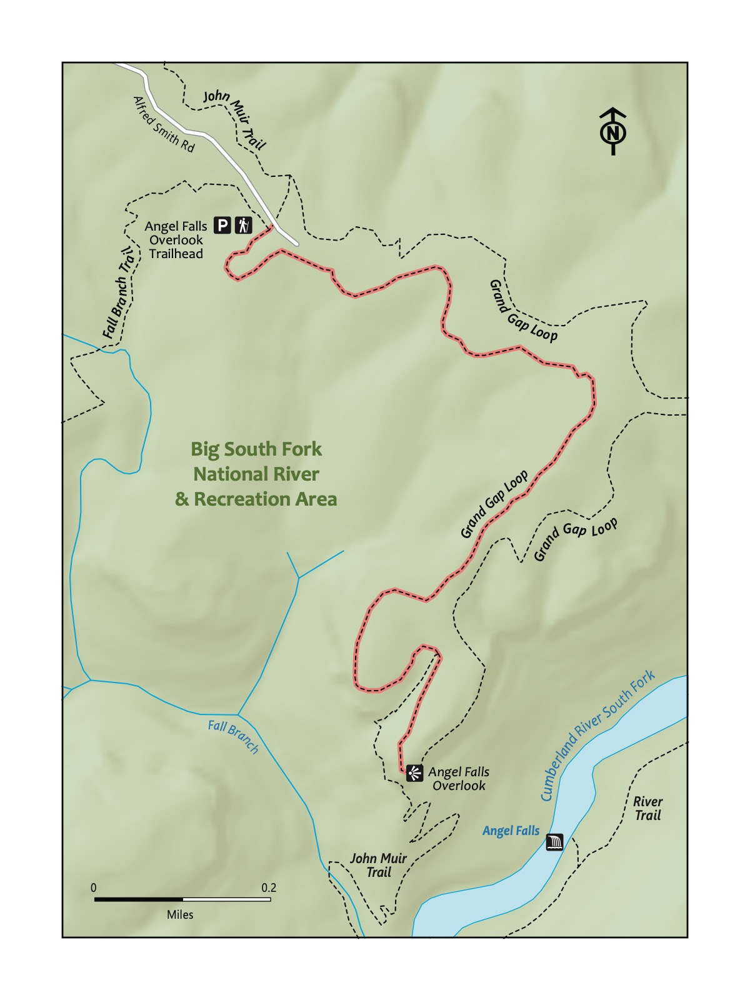
Overview
Like a few of the other trails in or near the Cumberland Plateau, this is a spectacular hike that is a little off-the-radar of many in Knoxville. This is a spectacular hike that is a little tricky to get to for a day hike. Still, the view is awesome, rivaling the summits of the Smokies with a different kind of vantage — here, of the beautiful Big South Fork River. This trail is relatively flat and relatively short, making it appropriate for families with young children. Consider camping at the nearby Bandy Creek campground, and consider this hike a day’s excursion from there.
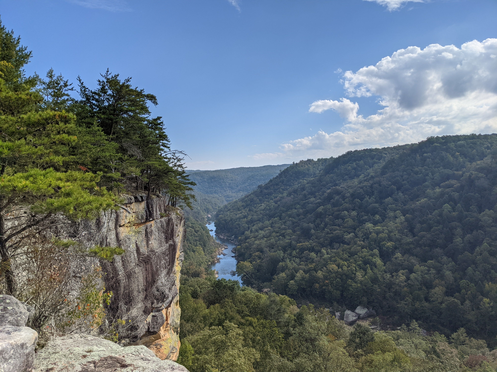
Directions to the Trailhead
| Trailhead Address | Grand Gap Loop Trailhead, G84V+69 Oneida, Tennessee |
|---|---|
| Trailhead GPS Coordinates | 36.50549, -84.65664 |
This address is for the trailhead for the Grand Gap Loop, deep into the Big South Fork National River & Recreation Area. The address uses a Google Maps “Plus code,” as there is not a street address for the trailhead. Please note this only works for Google Maps. Turn right into the parking area from Alfred Smith Rd. Look for the Grand Gap Loop Trail to begin the hike.
Trail Description
| Distance from Start | Description |
|---|---|
| 0.0 | Start on the Grand Gap Loop (part of the John Muir Trail - they share a name at this point). Head counterclockwise on the loop trail; the other direction is a much longer way to the overlook. |
| 0.85 | Grave site. |
| 1.0 | Descend gently toward the overlook. |
| 1.4 | Overlook. Rest and picnic at the large rocky overlook atop the Big South Fork and Angel Falls. Then, turn around to return to the start. |
| 2.8 | Trailhead. |
Nearby
- Stopping by Bandy Creek. Check out the Bandy Creek chapter for more details.
- Hiking the Angel Falls Trail—and others. The Angel Falls Trail—not to be mistaken with the trail taken to the overlook featured in this hike—starts at the parking area beside the Leatherwood Ford Bridge. It follows the Big South Fork River to conclude with a different—closer—view of Angel Falls, but without the vista from the overlook. Also, the Big South Fork National River and Recreation Area has more than 300 miles of trails.
Trail 19 : Honey Creek
Key Characteristics
| Trail Name | Honey Creek Loop |
|---|---|
| Region | Cumberland Plateau |
| Trail # | 18 |
| Time Estimate - Hiking Fast | 4 hours |
| Time Estimate - Hiking Slowly | 7 hours |
| Trail Distance (Miles) | 4.4 |
| Elevation Change | Steep |
| Pets | Not Allowed |
| Parking Pass/Entrance Fee | Required |
| Restroom(s) | No |
| Terrain | Rocky path; dirt path; ladders; river rock hopping |
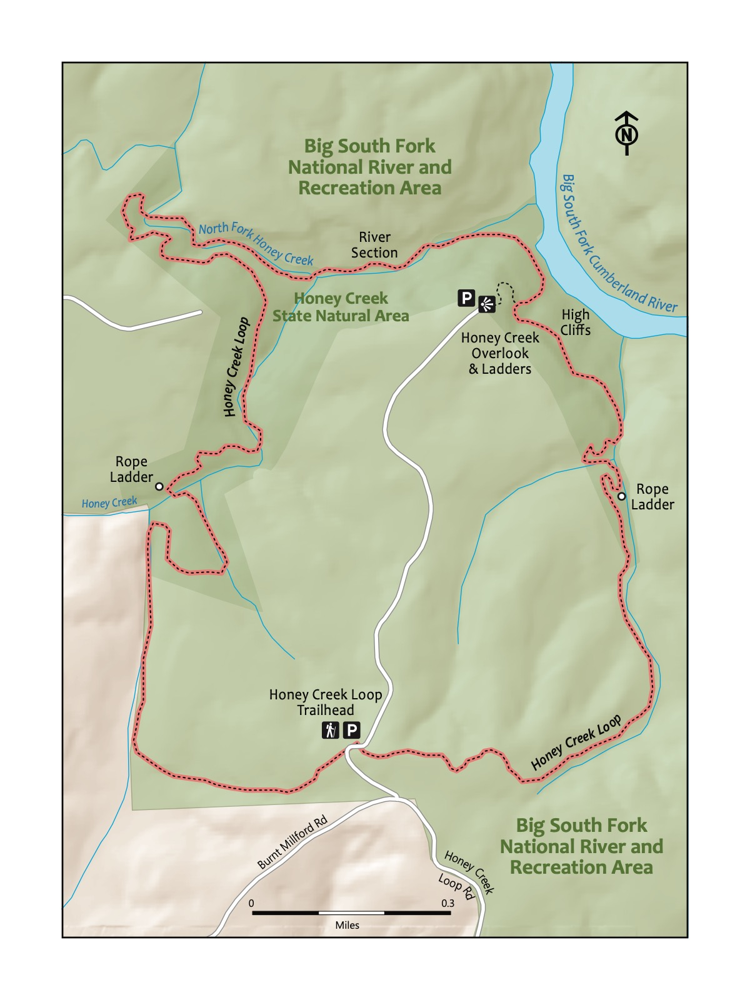
Overview
Unreal! This trail features rope ladders, wooden ladders, gigantic sandstone walls, a scenic overlook, a trail that traverses up a river, and boulders you crawl over and through. It’s spectacular and challenging. A memorable trail that exemplifies what makes the Cumberland Plateau region such a worthy complement to the Great Smoky Mountains National Park. Younger children may be able to hike the first half (traveling counterclockwise from the trailhead); you can walk the road back to the trailhead. The second half of the trail contains more challenging (but very beautiful) sections. Still, it’s hard — probably the most difficult for most in this book.
Directions to the Trailhead
| Trailhead Address | Honey Creek Trailhead and Parking Area, C8CX+G7 Allardt, Tennessee |
|---|---|
| Trailhead GPS Coordinates | 36.42123, -84.65180 |
Navigate to the Honey Creek Trailhead. Note that there is also a Honey Creek Overlook — the incorrect start for this hike. The above address uses a Google Maps “Plus” code in lieu of a street address for this trailhead; it only works in Google Maps.
Park in one of the many spots at the trailhead. The trail begins slightly past the trailhead, on the other side of the road from the large signpost for the trailhead, slightly up the road. Look for the Honey Creek Loop Trail sign.
Trail Description
| Distance from Start | Description |
|---|---|
| 0.0 | Start on the Honey Creek Loop Trail. Gently wind through the densely wooded forest. |
| 0.2 | Gently, then more steeply, descend through the woods. |
| 0.9 | Rope ladder. |
| 1.05 | Enter the section with high cliff walls along the left of the trail. |
| 1.35 | Trail splits to the left to head to the overlook. Ladders. |
| 1.45 | Overlook. After stopping at the overlook, head back down to resume the trail—or, optionally, walk the road back 0.8 miles to the parking area and trailhead!). Turn left at the trail juncture to head down toward the Big South Fork. |
| 1.75 | Trail turns up into Honey Creek. This is the wildest (and most fun) section of the trail. Look for the green symbol with two hikers as a guide to follow the trail; in places, you’ll walk on the of and even through the creek and through crevices and cracks in giant boulders! |
| 2.25 | Head up and away from the creek. |
| 2.75 | Wind through and around huge boulders and rocks. Continue to look for the green trail symbols—you’re almost out of the chaotic section! |
| 3.0 | Ice Castle Falls, a beautiful waterfall. |
| 3.1 | Gentle climb through a rocky, exposed section with different vegetation. |
| 3.25 | Short rope ladder. |
| 3.3 | Trail levels out, then climbs back to the start and the trailhead. |
| 4.4 | Trailhead. |
Nearby
- Grabbing a slushie! This is one of the most remote—if not the most remote—hikes in this book. A favorite stop on the way back from Honey Creek is a slushie at the Pilot Travel Center (106 Comfort Ln, Pioneer, TN 37847) off exit 122 on I-75.
The Great Smoky Mountains National Park is the most visited National Park in the United States, recently an astonishing 14 million visitors per year. It’s an astonishing place — high mountain ridges with plants reminiscent of the northern United States and even Canada; river and creek beds with abundant aquatic wildlife; a place of wild bears and stories and the history of both Cherokee and European settlers still present. There’s no way around these hikes being the heart of this book. That is not meant to diminish those close to Knoxille and the Cumberland Plateau, which in other parts of the country would stand apart as destinations in their own right. It just speaks to how special the Smokies can be.
That said, a note and a warning. Many hikes in the Smokies that are featured in this book are an hour — some a little more, and others a little less — from Knoxville. The high number of visitors and the proximity of Knoxville have key implications for families: you can be choosy about when and where to go! While there are few things more special than a Smokies hike up, for example, a beautiful creek on a perfect Fall day, there are few things more challenging than being stuck in traffic, no trail in sight, with tired out kid, or ending up on a trail that feels more like a line at nearby Dollywood than a hike in the woods. But, this is the benefit of living in Knoxville, and even in the height of the summer, there are trails to visit—and times to visit—that will surprise you with how few people there are! So, both our trails and recommendations about them emphasize not the best trails in general, but those that are best suited for family hikes.
Trail 20: Spruce Flats Falls
Key Characteristics
| Trail Name | Spruce Flats Falls |
|---|---|
| Region | Great Smoky Mountains National Park |
| Trail # | 20 |
| Time Estimate - Hiking Fast | 1.5 hours |
| Time Estimate - Hiking Slowly | 2.5 hours |
| Trail Distance (Miles) | 1.6 |
| Elevation Change | Moderate |
| Pets | Not Allowed |
| Parking Pass/Entrance Fee | Required |
| Restroom(s) | Yes |
| Terrain | Dirt path; rocky path |

Overview
An adventurous hike in the Smokies accessible to many families, it is also a great introduction to the Smokies, particularly when visiting from around Knoxville (it’s fairly close). It’s on the Great Smoky Mountains Institute site at Tremont, a national leader in outdoors and environmental education. It is the first hike in this section for a good reason. The proximity to Townsend is a bonus. Best for little kids and big kids.

Directions to the Trailhead
| Trailhead Address | 9275 Tremont Rd, Townsend, TN 37882 |
|---|---|
| Trailhead GPS Coordinates | 35.64000, -83.68905 |
The address and coordinates are for the Great Smoky Mountains Institute, as this is the easiest-to-locate destination. When nearly there (less than a quarter of a mile from the destination), you’ll cross a bridge to enter the Institute. You’ll see a lot of parking around — and the gift shop. Though the trailhead and Google Maps will navigate you a little further, the parking you see here is the best place to park. From this parking lot, walk up the road a little toward the Spruce Flats Falls Trailhead to start the hike.
Trail Description
| Distance from Start | Description |
|---|---|
| 0.0 | You’ll see signs for Spruce Flats Falls, but you’ll begin ever-so-briefly on a different trail that connects to the trail you’ll take to the falls, Buckeye Trail. Start on the Lumber Ridge Trail. |
| 0.1 | Turn right onto the Buckete Trail, the trail you’ll be on all the way to the falls (and back to this spot on the return journey). |
| 0.15 | Trail levels out before a steep cluimb. |
| 0.3 | Climb begins. It’s a (good) challenge! |
| 0.5 | High point of the hike in a piney outcropping. Good photo spot. Begin to wind down toward the waterfall. |
| 0.8 | Spruce Flat Falls. A great snack or picnic spot. After a nice break, turn around the way you came. |
| 1.6 | Trailhead. |
Nearby
- Stopping at the Tremont store. The gift store at Tremont (the full name is the Great Smoky Mountains Institute at Tremont) is usually open Monday – Friday from 10:00 a.m. – 4:00 p.m.
- Hiking the West Prong trail. This is a great nearby trail to a great picnic spot (at the site of Backcountry Site #18— across the road from the Great Smoky Mountains Institute at Tremont.
- Visiting Townsend. See Chestnut Tops trail for more detail.
Trail 21: Little River
Key Characteristics
| Trail Name | Little River Loop |
|---|---|
| Region | Great Smoky Mountains National Park |
| Trail # | 19 |
| Time Estimate - Hiking Fast | 3 hours |
| Time Estimate - Hiking Slowly | 5 hours |
| Trail Distance (Miles) | 5.5 |
| Elevation Change | Moderate |
| Pets | Not Allowed |
| Parking Pass/Entrance Fee | Required |
| Restroom(s) | No |
| Terrain | Dirt path |
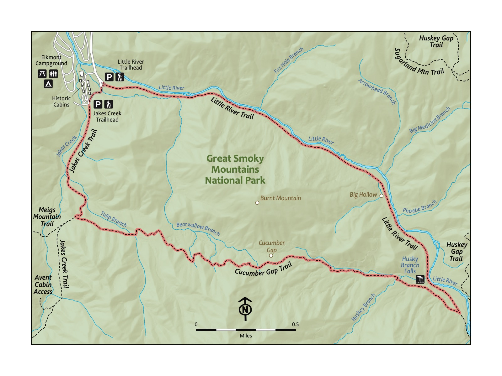
Overview
This hike is a great introduction to the Great Smoky Mountains National Park by featuring a bit of many of the elements that make the Smokies special — a trail along a beautiful, clear river; a waterfall; abundant plant and aquatic wildlife; deep forest; and human history in the form of historic cabins. It’s close to many amenities, and the drive from Knoxville is doable in a day. The hike starts at the Little River trailhead, following the Little River along its namesake river. Turn around near the small waterfall or continue the loop back to the trailhead. Great for kids of all ages because there is not any one spot you must reach on the trail; hike as far as you like and then head back to the start to picnic or check out the historic cabins!
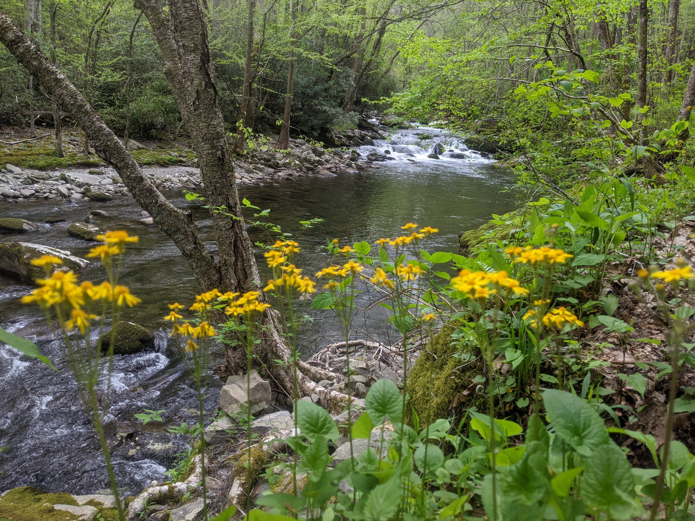
Directions to the Trailhead
| Trailhead Address | Elkmont Campground, MC58+3H Gatlinburg, Tennessee |
|---|---|
| Trailhead GPS Coordinates | 35.65346, -83.58005 |
The trailhead address includes a “Plus code” to park at the start of the Little River Trail — that parking area does not have a specific address. If you navigate to “Elkmont Campground,” then look for signs to the parking for the Little River Trail, where this hike begins. Park and look for the gate across the gravel road, where the Little River Trail begins.
Trail Description
| Distance from Start | Description |
|---|---|
| 0.0 | Pass around the gate (it’s closed only to vehicles) to begin on the Little River Trail. |
| 0.1 | Pass the Spence Cabin, a histotic cabin that is available to rent (for the day — not for nights!). |
| 0.45 | Trail begins to ascend. |
| 2.1 | Huskey Branch Falls on the right side of the trail. |
| 2.4 | Reach the intersection of the Little River Trail and the Cucumber Gap Trail. Turn right onto the Cucumber Gap trail. Trail climbs up toward Cucumber Gap. |
| 3.4 | Cucumber Gap — the high point of this hike. Begin to descend. |
| 4.65 | Reach the intersection of Cucumber Gap Trail and Jakes Creek Trail. Turn right onto Jakes Creek Trail. |
| 5.3 | Reach Jakes Creek Road. Turn right to return to the trailhead. |
| 5.5 | Trailhead. |

Nearby
- Visiting historic cabins. The nearby historic cabins are a must-see. Kids love to duck into and out of many recently restored (and others in the process of being restored).
- Camping at Elkmont campground. The Elkmont Campground is scenic, large, and worth a visit, especially if you can reserve a spot beside the Little River.
Trail 22: Mouse Creek
Key Characteristics
| Trail Name | Mouse Creek Falls |
|---|---|
| Region | Great Smoky Mountains National Park |
| Trail # | 20 |
| Time Estimate - Hiking Fast | 2 hours |
| Time Estimate - Hiking Slowly | 4 hours |
| Trail Distance (Miles) | 4.0 |
| Elevation Change | Moderate |
| Pets | Not Allowed |
| Parking Pass/Entrance Fee | Required |
| Restroom(s) | Yes (seasonal) |
| Terrain | Dirt path; rocky path |
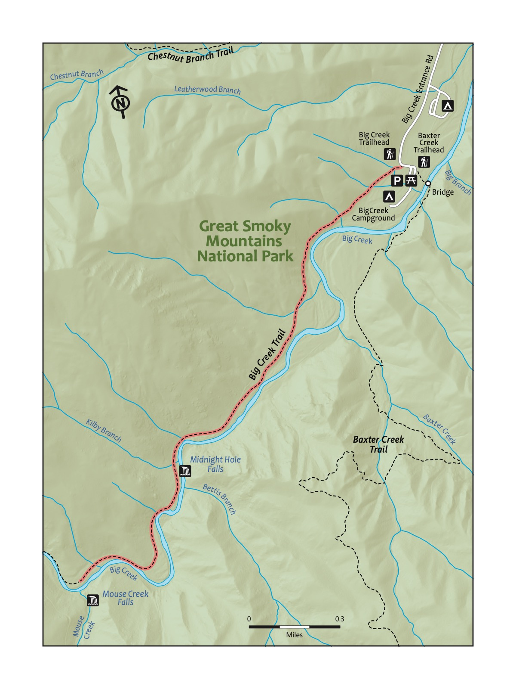
Overview
Surprisingly close to Knoxville, given how remote and wild this trailhead and trail feels, Mouse Creek in the Big Creek area of the Smokies is quite a bit less well-known than many of the other trails in the Great Smoky Mountains National Park in this book. The creek that this trail follows looks otherwordly - clear and almost turquoise in color. This hike starts at a trailhead at the Big Creek Picnic Area — beside the Big Creek Campground. The trail starts off a little steep, but the trail is wide and smooth; like the Middle Prong trail, this trail used to be a railroad bed. The trail follows above the creek and then returns closer to it, with Mouse Creek Falls as the turn-around. A good day-trip adventure for kids and families; the smooth grade makes this an achievable hike for younger littles.

Directions to the Trailhead
| Trailhead Address | Big Creek Picnic Area, QV2R+H6 Newport, Tennessee |
|---|---|
| Trailhead GPS Coordinates | 35.75132, -83.10964 |
Navigate to the Big Creek Picnic Area. Note that the above address uses a Google Maps “Plus code” in the absence of a street address for this picnic area; the plus code only works in Google Maps. The picnic area is at the end of a bumpy dirt road; it’s large and easy to find. You may note the Big Creek Trailhead on the way (it was on the right, immediately before the parking lot). Park and then backtrack a little on the road you took to the parking area to find the start of this trail. Kids may like to play around the picnic area (and the pretty bridge crossing Big Creek) before or after the hike!
Trail Description
| Distance from Start | Description |
|---|---|
| 0.0 | Start on the Big Creek Trail. Gradually ascend. |
| 0.1 | Ascend grardually on a wide path. |
| 1.4 | Midnight Hole Falls. Great swimming spot in the summer. |
| 2.0 | Mouse Creek Falls. Turn-around spot. Head back to the start. Optionally, continue farther on the trail. |
| 4.0 | Trailhead. |

Nearby
- Picnicking at a lovely picnic area. The Big Creek Picnic Area is one of the finest spots to picnic in the Great Smoky Mountains National Park. Start or end your hike with a picnic here.
Trail 23: Whiteoak Sink
Key Characteristics
| Trail Name | Whiteoak Sink |
|---|---|
| Region | Great Smoky Mountains National Park |
| Trail # | 21 |
| Time Estimate - Hiking Fast | 3 hours |
| Time Estimate - Hiking Slowly | 5 hours |
| Trail Distance (Miles) | 4.6 |
| Elevation Change | Moderate |
| Pets | Not Allowed |
| Parking Pass/Entrance Fee | Required |
| Restroom(s) | No |
| Terrain | Dirt path |
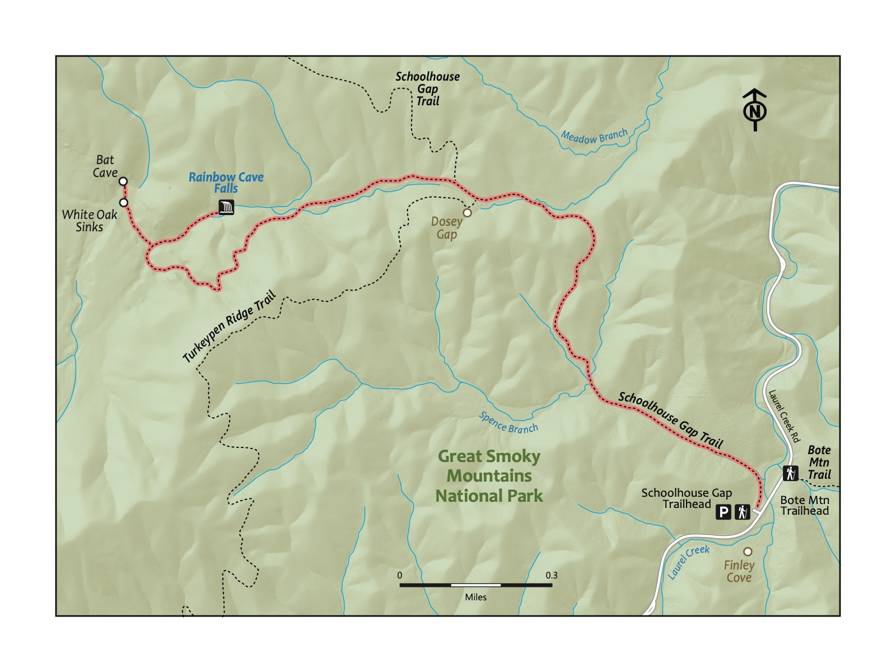
Overview
This is the wildflower hike in the Smokies. It’s a joy in mid-late April, depending on the year’s weather. This hike starts on the kid-friendly Schoolhouse Gap trail and then connects to the Whiteoak Sink trail, which is a bit rockier but still hike-able by younger children. You may notice that Whiteoak Sink does not appear on the National Park Service trail map for the Smokies; technically, Whiteoak Sink is not an official trail in the Great Smoky Mountains National Park, and the key takeaway for hikers is to respect this unique area of the park by staying on the trail and refraining to pick wildflowers. It is a must-hike during wildflower season, but also worth a trip outside of that elusive spring period. Because of the length, best for younger kids who are carried some or all of the way, or kids who are comfortable with a longer hike.
Directions to the Trailhead
| Trailhead Address | Schoolhouse Gap Trailhead, J7GF+W9, Townsend, TN 37882 |
|---|---|
| Trailhead GPS Coordinates | 35.62718, -83.72650 |
The above address is for the parking area beside the trail. Please note it uses a Google Maps “Plus code”, as this trailhead does not have a street address. This plus code only works in Google Maps. Park, and look for several large boulders next to a sign for the Schoolhouse Gap Trail to begin the hike.
Trail Description
| Distance from Start | Description |
|---|---|
| 0.0 | Start on the Schoolhouse Gap Trail. Trail very gradually ascends. |
| 0.4 | Trail climbs more steeply (but managably!). |
| 1.1 | Intersection with the trail to Whiteoak Sink. Note that Whiteoak Sink is not an official trail on the official trail map for the Great Smoky Mountains National Park; thus, the trail is not as well marked as most others. Turn left from the Schoolhouse Gap trail onto the trail to Whiteoak Sink. Descend for around .25 miles. |
| 1.4 | Ascend steeply through a pretty and densely wooded forest. |
| 1.7 | High point. Descend into Whiteoak Sink. |
| 1.9 | Reach an intersection. The trail to the right heads to Rainbow Cave Falls (different from and not to be confused with the Rainbow Falls Trail near Gatlinburg!). After stopping at the waterfall, turn around to return to the intersection of the primary trail. |
| 2.2 | Turn right back onto the primary trail. Enter the part of the trail with the densest understory of wildflowers. Tread carefully; stay on the trail to not damage any of the plants near to the trail. |
| 2.35 | Reach the large bat cave ahead of the end of the trail. Still tread carefully (and do not attempt to enter the caves for your safety and to not endanger the bats). Optionally, turn right or left to explore more of this special area. Then, turn around to return along the trail you took into Whiteoak Sink. Return to the start. |
| 4.6 | Trailhead. |
[][trail-21-figure-02-1]
Nearby
- Exploring the Cades Cove loop. A drive around the Cades Cove Loop can complement a hike to Whiteoak Sink. We recommend only driving this beautiful loop road outside of the busiest times (summer and fall weekends and holidays, mainly) when traffic can be intense. Consult the Abrams Fall hike for additional details on this area and nearby amenities.
- Visiting Townsend. Like the Chestnut Tops hike, visiting “The Peaceful Side of the Smokies,” Townsend, is a great way to end this trip to the Great Smoky Mountains National Park.
- Hiking the West Prong Trail. The nearby West Prong Trail is a favorite that didn’t quite make it into this book, but it is still a worthy destination. Instead of hiking up Schoolhouse Gap (like for this trail), cross the road and hike to the scenic backpacking site #18 as the turn-around spot beside a wood log bridge and pretty creek.
Trail 24: Middle Prong
Key Characteristics
| Trail Name | Middle Prong |
|---|---|
| Region | Great Smoky Mountains National Park |
| Trail # | 22 |
| Time Estimate - Hiking Fast | 4 hours |
| Time Estimate - Hiking Slowly | 6 hours |
| Trail Distance (Miles) | 7.6 |
| Elevation Change | Moderate |
| Pets | Not Allowed |
| Parking Pass/Entrance Fee | Required |
| Restroom(s) | No |
| Terrain | Dirt path; rocky path |
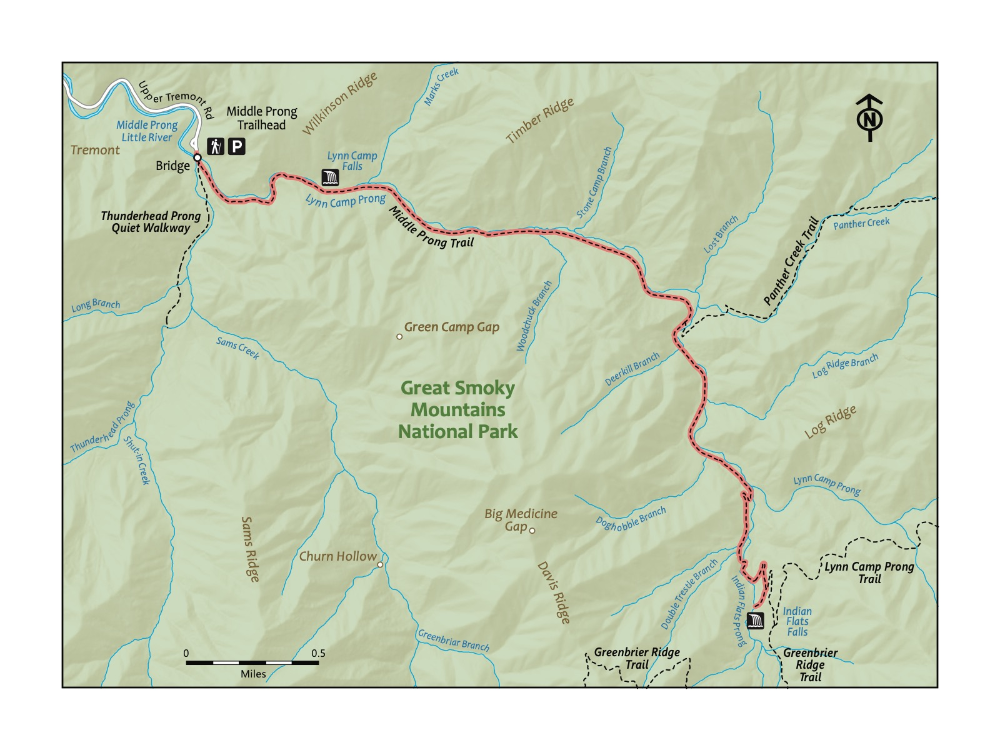
Overview
This hike is great for families looking to have an authentic hiking experience deep in the Smokies while still being only a little over an hour’s drive from Knoxville. A benefit of this hike is its distance–only 0.6 miles to the waterfall, but along a stream that affords many chances to hop in and splash. The turn-around spot is an overlook to a waterfall, Lynn Camp Prong, though the trail continues after the cascades up to another waterfall, Indian Flats Falls. Given the ample shade and easy access to the stream, this is a great hike for the summer, but it is enjoyable in all seasons. Good for kids of all ages.

Directions to the Trailhead
| Trailhead Address | Middle Prong Trail Trailhead, J89J+54 Townsend, Tennessee |
|---|---|
| Trailhead GPS Coordinates | 35.61794, -83.66971 |
The above address will navigate you to the parking area for the trailhead. Please note it uses a “Plus code” in lieu of a stree address that only works in Google Maps. Note that this trailhead is at the end of a lengthy gravel road, but it’s fairly smooth (and it’s a pretty drive). This is a large parking area. Even on the busiest days, you will be able to find a place to park. There are spots around the turn-around, but, if they are taken, it is acceptable to park on the side of the road. After parking, walk toward the bridge to start your hike.
Trail Description
| Distance from Start | Description |
|---|---|
| 0.0 | Cross the bridge over Lynn Camp Prong. Ascend gradually on the Middle Prong Trail. |
| 0.05 | Almost immediately past the bridge, not the split in the trail. This hike heads to the left. A short trail, the Thunderhead Prong Quiet Walkway, heads to the left (it’s a great place for kids to play and splash on hot days!). |
| 0.65 | Overlook to Lynn Camp Prong. Though a short way in, this is an acceptable spot to turn around and head back to the start. The trail continues onward. This is one of many trails in the Smokies that is pretty and very worthwhile all along the way; hike as far as you or your littles like. |
| 2.35 | Intersection with Panther Creek Trail on the left. Continue on the Middle Prong Trail. |
| 3.6 | Begin a brief switchback before the waterfall at the end of this hike. |
| 3.8 | Reach Indian Flat Falls. Look for a little opening in the trees and shrubs. You’ll find it! After resting at the beautiful waterfall, turn around to return to the start. |
| 5.25 | Intersection with the Panther Creek Trail on the right. |
| 7.6 | Trailhead |
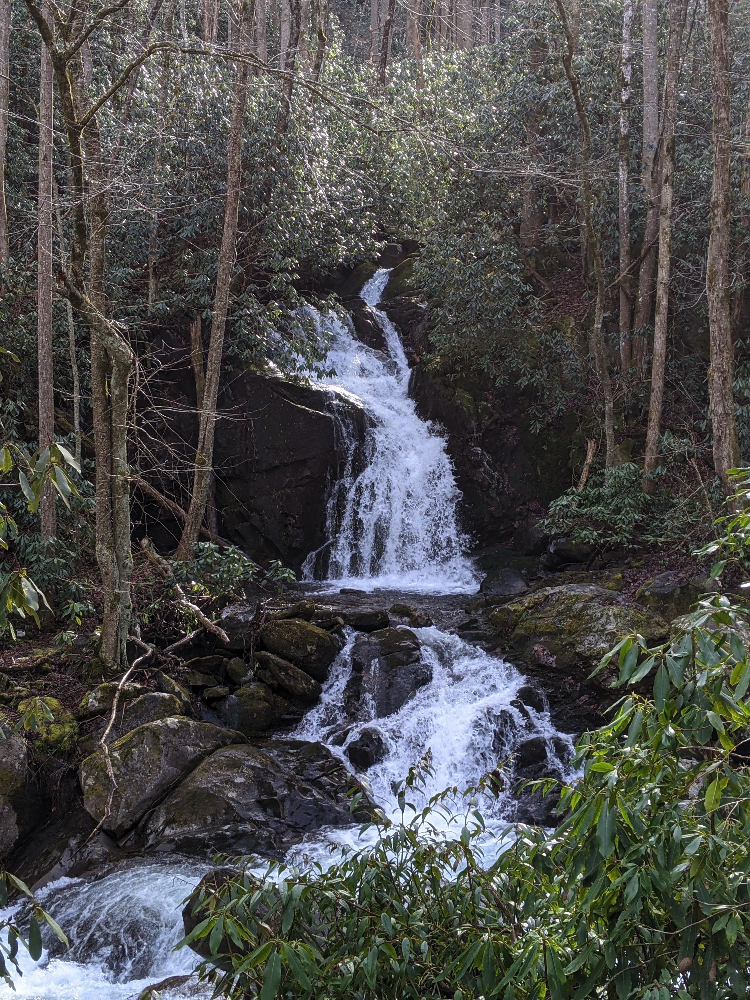
Nearby
- Driving the Cade’s Cove Loop. This is a nice way to make a longer day of your trip. Instead of returning the way you came, at the intersection of Townsend Road and Laurel Creek Road, turn left and head toward Cade’s Cove. The drive to Cade’s Cove is around 15 minutes; the loop road around Cade’s Cove takes around 45 minutes to drive–longer on busy days, especially when bears are visible–which is often! Traffic on the loop road can be severe, especially during peak times, so plan accordingly to avoid restless kiddos.
- Stopping for a snack or meal in Townsend. Townsend bills itself as the “Peaceful Side of the Smokies”. Peaceful Side Social is a favorite lunch and dinner spot with kids, owing to the good food and large outdoor play area.
Trail 25: Abrams Creek
Key Characteristics
| Trail Name | Abrams Creek |
|---|---|
| Region | Great Smoky Mountains National Park |
| Trail # | 23 |
| Time Estimate - Hiking Fast | 4 hours |
| Time Estimate - Hiking Slowly | 6 hours |
| Trail Distance (Miles) | 5.8 |
| Elevation Change | Moderate |
| Pets | Not Allowed |
| Parking Pass/Entrance Fee | Required |
| Restroom(s) | Yes (seasonal) |
| Terrain | Dirt path; rocky path; small creek crossings |
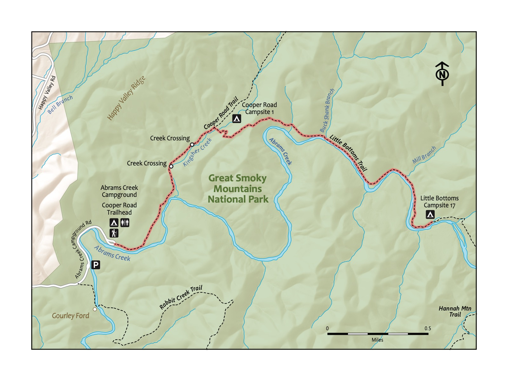
Overview
Abrams Creek is a great place to start hiking in the Smokies if you live in or around Knoxville. It’s accessible, offers a wide variety of features to please all members of the family, and has the added bonus of being beautiful! The enduring memory from this trail is of kids splashing endlessly in the shallow creeks. This was the first place we traveled as a family in the Smokies, and we returned again and again because we always enjoyed our time together there. There are many ways to shorten the hike, and we often hike around a mile in and then turn around. It can be warmer here in the summer months, but the river offers many opportunities to swim and splash around, making it a great destination for the summer as well. This hike is relatively challenging and better suited to hiking with older children, but the beauty of this hike is its versatility.

Directions to the Trailhead
| Trailhead Address | Abrams Creek Campground, J368+MR Tallassee, Tennessee |
|---|---|
| Trailhead GPS Coordinates | 35.61095, -83.93356 |
It never seems to become crowded at Abrams Creek, but parking can be a bit confusing. This is because the campground is further along the same road the trailhead is on. Also, there are two areas to park for the trailhead. We usually park by the gate to the campground, but you can also park near the large sign with maps of this area of the national park.
Trail Description
| Distance from Start | Description |
|---|---|
| 0.0 | Start at the trailhead parking area. Walk along the road beside Abrams Creek. |
| 0.4 | Arrive at the campground. A great spot to rest and hang out by the creek. |
| 1.0 | Cross Kingfisher Creek for the first time. Watch for rocks and branches to aid in crossing. |
| 1.1 | Cross Kingfisher Creek again about 100 yards past the first crossing. |
| 1.3 | Reach Backcountry Site #1. Frequently used by overnight backpackers; a good resting spot. We often turn around here! |
| 1.5 | Reach the top of the ridge after a steep climb. Another great place to stop and rest (or turn around). Or continue for a grand adventure. |
| 1.6 | Arrive at the overlook with views of Abrams Creek and Gregory Bald in the distance. |
| 2.0 | Return to Abrams Creek near its intersection with Buckshank Branch. A great spot to relax and splash in the creek. |
| 2.8 | Reach Backcountry Site #17. Turn around here to head back to the start. |
| 4.3 | Return to Backcountry Site #1. |
| 5.6 | Trailhead. |

Nearby
- Visiting the Look Rock Overlook. Check the Look Rock Overlook hike for a short, nearby hike to a pretty overlook.
- Camping at Abrams Creek Campground. This is a lovely creekside campground that you pass on this hike. Consider a stay in the summer, when jumping in the cool, not-too-deep creek can be a respite from the heat—or in the fall when this area pops with fall colors.
Trail 26: Look Rock
Key Characteristics
| Trail Name | Look Rock Overlook |
|---|---|
| Region | Great Smoky Mountains National Park |
| Trail # | 24 |
| Time Estimate - Hiking Fast | 30 minutes |
| Time Estimate - Hiking Slowly | 1 hour |
| Trail Distance (Miles) | 0.6 |
| Elevation Change | Moderate |
| Pets | Not Allowed |
| Parking Pass/Entrance Fee | Required |
| Restroom(s) | No |
| Terrain | Paved path |
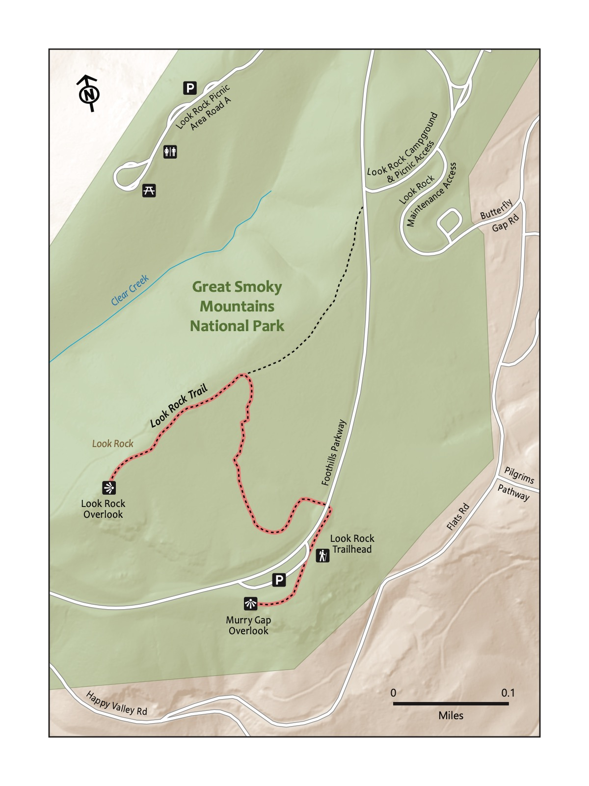
Overview
This is a short but rewarding overlook hike that is just a moderate drive from Knoxville. The entire hike is paved — but the trail is steep. Start at a parking area with a very scenic overlook. The trail starts steep but then levels out. At the top is a tower that affords views of the Smokies as well as the Tennessee Valley and Knoxville. Clear days are more often found in the winter, spring, and fall (after the humidity drops). Consider coupling with a drive along the Foothills Parkway, or take visitors here after you pick them up from the airport in nearby Maryville, as we have with our parents! This is a fun family thike with littles that serve as a nice and usually not crowded introduction to the Smokies. 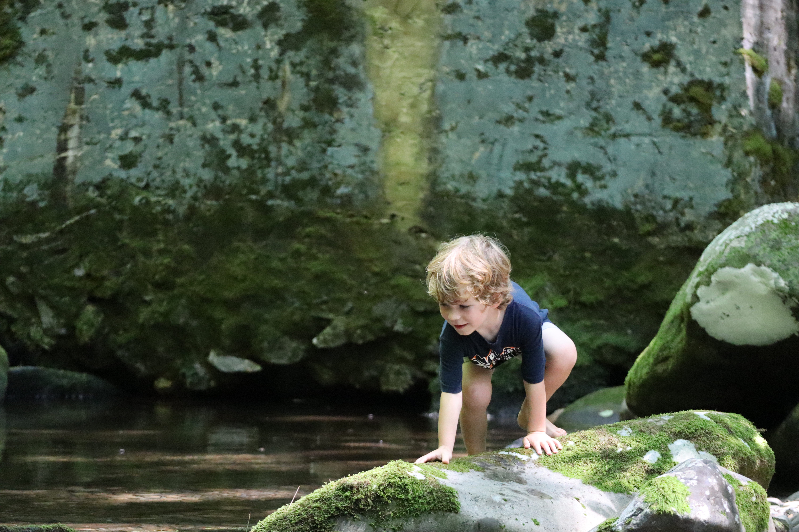
Directions to the Trailhead
| Trailhead Address | Look Rock Lower Overlook, 7210 Flats Rd, Tallassee, TN 37878 |
|---|---|
| Trailhead GPS Coordinates | 35.63099, -83.94083 |
The above address takes you to a large parking lot with a scenic overlook. Park, and look for the scenic overlook—the Murry Gap Overlook. From there, walk along the back of the parking lot, and then along a sidewalk. Cross the road to the Look Rock Trail to begin the hike.
Trail Description
| Distance from Start | Description |
|---|---|
| 0.0 | Start at the Murry Gap Overlook. |
| 0.15 | Cross the road to the Look Rock Trail. |
| 0.35 | Intersection. Turn left to continue on the Look Rock Trail. |
| 0.4 | Weather station to the right. Continue on the trail. |
| 0.5 | Reach the overlook. Climb the ramp to reach the top—and take a look in all directions! Return back down the ramp to return to the start. |
| 0.65 | Intersection. Turn right to return to the parking lot and trailead. |
| 1.0 | Trailhead. |
Nearby
- Visiting Abrams Creek. See the Abrams Creek hike for a nearby, lengthier expedition.
- Driving the Foothills Parkway. On the way to the trailhead for this hike, you briefly drove on the Foothills Parkway—Tennessee’s scenic parkway that receives far fewer visits than the well-known Blue Ridge Parkway. But this is an underrated road featuring scenic overlooks of the Smokies and limited traffic. Drive from here to Walland or Wears Valley and then turn back; or head home from there.
Trail 27: Chestnut Top
Key Characteristics
| Trail Name | Chestnut Top |
|---|---|
| Region | Great Smoky Mountains National Park |
| Trail # | 25 |
| Time Estimate - Hiking Fast | 1.5 hours |
| Time Estimate - Hiking Slowly | 2.5 hours |
| Trail Distance (Miles) | 2.6 |
| Elevation Change | Steep |
| Pets | Not Allowed |
| Parking Pass/Entrance Fee | Required |
| Restroom(s) | No |
| Terrain | Dirt path |
MISSING_IMAGE:432]=$PROJECT://37057188-8808-478B-BD19-A019E98EA545.pdf}
Overview
Steep but quiet and rewarding, Chestnut Top is a fun choice for a shorter hike in the Great Smoky Mountains National Park. This hike is one of the closest to Knoxville. Furthermore, it is close to the amenities of Townsend — a far quieter town than Pigeon Forge and Gatlinburg. The trail starts with a steep climb until it reaches a rocky point that is a great stopping point; we always grab a snack here, and kiddos like to hike on or around the rocks. The trail continues along the trail past pretty mountain laurel, typically in bloom around mid-May through early June, stopping at a fun but somewhat arbitrary point - a hollow tree! Continue farther if you like, or head back to the start and the Townsend Wye, a great picnic and water play spot. Best for kids who are comfortable with a steady climb. [][trail-25-figure-alt]
Directions to the Trailhead
| Trailhead Address | Townsend Wye, Laurel Creek Rd & Little River Rd, Townsend, TN 37882 |
|---|---|
| Trailhead GPS Coordinates | 35.66027, -83.70839 |
This address is for the Townsend Wye, a prominent intersection between Townsend, the road to Gatlinburg (Little River Gorge Rd.), and the road to Cades Cove (Laurel Creek Road) and one of the best-known summer swimming spots in the Smokies. Park in the large parking area on the left of the Townsend Entrance Rd. on which you entered if coming from Knoxville and Townsend. The trail begins across the Townsend Entrance Rd. — look for a sign across the road for the Chestnut Top Trail.
Trail Description
| Distance from Start | Description |
|---|---|
| 0.0 | Start on the Chestnut Top Trail. Ascend steeply. |
| 0.6 | Trail levels out. Townsend visible from the trail. |
| 0.70 | Rocky outcropping. Great place for a break and for kids to scramble up and around the rocks. Look for Mountain Laurel a little bit up the trail that flowers around May and June. |
| 1.3 | Hollow Tree. This is the turn-around spot for this hike. Alternatively, if you like, head farther up the trail! |
| 2.6 | Trailhead. |
Nearby
- Visiting Townsend. Townsend rightly contrasts itself with busy Pigeon Forge and Gatlinburg—it remains quiet but full of places to stop. We love the kid-friendly Peaceful Side Social (7967 E Lamar Alexander Pkwy, Townsend, TN 37882) and the next-door Peaceful Side Creamery.
- Swimming at the Townsend Wye. This is a classic summertime Smokies activity. From the large parking area near the trailhead, swim in the Little River beside the Townsend Wye—the three-way intersection of Townsend Entrance Road (toward Townsend), Laurel Creek Road (to Cades Cove), and Little River Gorge Road (toward Gatlinburg).
Trail 28: Abrams Falls
Overview
This is a classic Smokies hike along the scenic Abrams Creek, ending in an epic waterfall. The only downside? You must drive (or, on Wednesdays in the summer, bike!) through Cades Cove to get to the trailhead, and Cades Cove is often busy. We recommend either being prepared for extensive traffic in Cades Cove or visiting during the week or outside of the busy warm weather weekends. With that caveat in mind, we recommend this as a true day-long family adventure worthy of a visit. The trail starts at a scenic trailhead near the intersection of two pretty creeks. it hikes through the piney forest, climbing a little at a few points. Abrams Falls is a wonderful spot for a lengthy picnic before returning to the start. Best for older children or younger children who are carried when their little legs get tired. 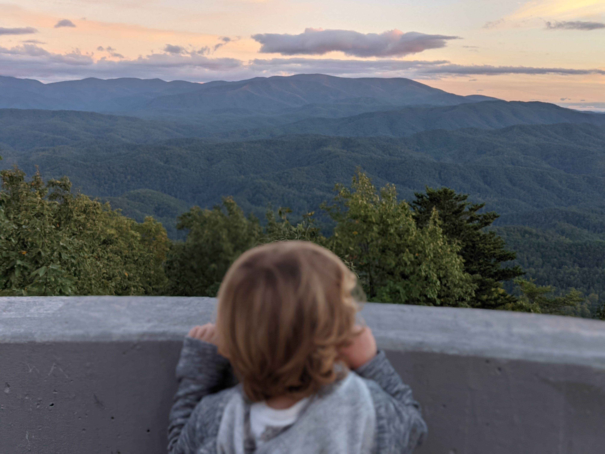
Directions to the Trailhead
| Trailhead Address | Abrams Falls Trailhead, H4RW+CX Townsend, Tennessee |
|---|---|
| Trailhead GPS Coordinates | 35.59129, -83.85233 |
:—– | :—– |
| |
xx
Trail Description
| Distance from Start | Description |
|---|---|
| 0.0 | Begin at the Abrams Falls Trailhead. Follow the signs to the Abrams Falls Trail, crossing a bridge over the scenic Abrams Creek soon after you start. |
| 0.1 | Wind along the path through a pine forest. |
| 1.1 | Rocky prominence that serves as a scenic overlook. |
| 2.2 | Small hill beside and atop Abrams Falls. Take the trail briefly, steeply down to the bottom of the waterfall. |
| 2.5 | Reach the base of the waterfall. There are many spots to stop and snack or picnic. Take care to watch from a distance and not swim in the pool of the falls here; the undertone is dangerous. After a break, turn around to begin the back portion of this out-and-back hike. |
| 5.0 | Trailhead. |
Nearby
- Visiting the visitor center. The Cades Cove Visitor Center (5686 Cades Cove Loop Rd, Townsend, TN 37882) up the road is a store, but it also abuts several nearby historical structures that are worth a visit)—the Cades Cove Historical Grist Mill and the John P Cable Drive Thru Barn (that you walk, rather than drive, to and through!). Try to find your way to Mill Creek to cool off in warm weather.
- Stopping at historic cabins and scenic lookouts. Though it can be busy with traffic, especially during peak visitation periods (summer and fall weekends, in particular), a drive through Cades Cove is punctuated with numerous opportunities to stop at historic cabins and scenic lookouts. Plus, much of the year, you and others will stop to see wildlife—deer, turkey, and often bears!
- Bike the Cades Cove Loop. Biking the Cades Cove Loop on car-free Wednesdays during the summer and into the early fall is a classic Smokies activity. We know it’s a lot for kids to bike (or be carried out on a bike) and to hike, so this may be best as a separate day trip.
[][cades]
Trail 29: Andrews Bald
Key Characteristics
| Trail Name | Andrews Bald |
|---|---|
| Region | Great Smoky Mountains National Park |
| Trail # | 27 |
| Time Estimate - Hiking Fast | 2 hours |
| Time Estimate - Hiking Slowly | 3.5 hours |
| Trail Distance (Miles) | 3.6 |
| Elevation Change | Moderate |
| Pets | Not Allowed |
| Parking Pass/Entrance Fee | Required |
| Restroom(s) | Yes (seasonal) |
| Terrain | Dirt path; rocky path |
MISSING_IMAGE:576]=$PROJECT://EC1B7912-002F-412B-9A7D-8D1FA752D6A6.pdf}
Overview
Andrews Bald is the under-rated twin to Kuwohi (formerly known as Clingman’s Dome). Kuwohi is the highest point in the Great Smoky Mountains National Park — the highest point in Tennessee and among the highest in the Eastern United States. Why Andrews Bald instead of Kuwohi? The path to Kuwohi is often exceptionally crowded. It is still worth a visit, but Andrews Bald is as or more exceptional in some ways: instead of reaching a crowded overlook, Andrews Bald is a grassy bald overlooking layers of mountains. Pair it with a trip to Kuwohi or a stop at Newfound Gap, perhaps catching sunset after an afternoon hike to Andrews Bald. One memorable experience for us: we saw a bear on this trail, our first as a family. The hike has some rocky elements, and it can be lengthy, so we recommend this hike for older children. 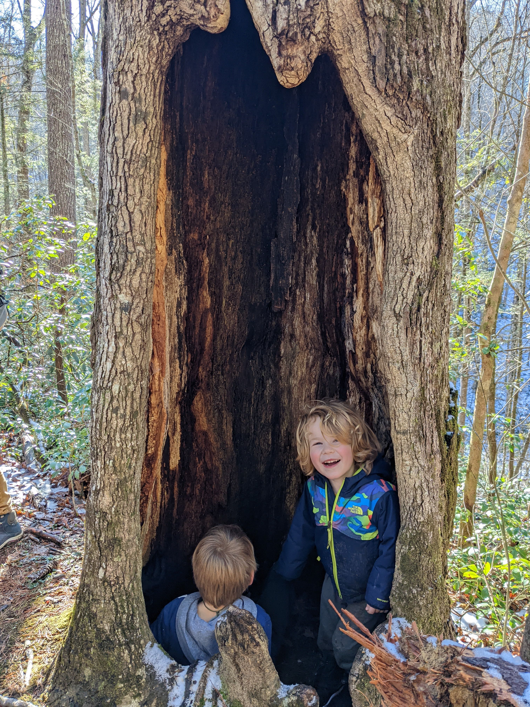
Directions to the Trailhead
| Trailhead Address | Kuwohi Trailhead, HG43+QG Bryson City, North Carolina |
|---|---|
| Trailhead GPS Coordinates | 35.55680, -83.49617 |
The above address is for the trailhead for Kuwohi—formerly named Clingman’s Dome until renamed to its traditional name to the Cherokee, Kuwohi. in 2023. Parking here can be difficult to find during busy periods (especially during the summer, during breaks, and on weekends during the fall).
Consider visiting outside of these busy periods to avoid being stuck waiting to find a spot. After finding a spot, walk toward the Kuwohi Visitor Center. Look for the signs for the Forney Ridge Trail (it’s just a few feet to the left along the same path as the Kuwohi Trail).
Trail Description
| Distance from Start | Description |
|---|---|
| 0.01 | Start on the Forney Ridge Trail. |
| 0.2 | Intersection with the Kuwohi Bypass Trail. Turn left. |
| 0.25 | A moderately rocky but well-maintained section that descends. Steep in sections. |
| 1.0 | Wooden walkways over a section that can be muddy. |
| 1.05 | Intersection with the Forney Creek Trail — different from the Forney Ridge Trail. Stay on the Forney Ridge trail to continue to Andrews Bald. |
| 1.8 | Andrews Bald. Explore the super-scenic, grassy area before turning back. |
| 2.55 | Intersection with Forney Creek Trail. Stay on the Forney Ridge Trail. |
| 3.4 | Intersection with the Kuwohi Bypass Trail. Turn right. |
| 3.6 | Trailhead. |

Nearby
- Visiting Kuwohi (Clingman’s Dome). Nearby Kuwohi and the Kuwohi Trail to access this peak feature an observation tower with views in all directions. There’s also the nearby Kuwhohi Visitor Center. Both the trail and visitor center share the same parking area.
- Stopping at Newfound Gap. On the way to Andrews Bald, you passed Newfound Gap—the mountain pass and scenic overlook atop the state line between Tennessee and North Carolina. This is a good place to stop for photos or a brief (or lengthier!) hike on the Appalachian Trail that runs through the parking lot—and toward the popular scenic overlook Charlie’s Bunion, a steep, challenging eight-mile round-trip hike from Newfound Gap.
Trail 30: Alum Cave Bluffs
Key Characteristics
| Trail Name | Alum Cave |
|---|---|
| Region | Great Smoky Mountains National Park |
| Trail # | 28 |
| Time Estimate - Hiking Fast | 3 hours |
| Time Estimate - Hiking Slowly | 5 hours |
| Trail Distance (Miles) | 4.5 |
| Elevation Change | Very Steep |
| Pets | Not Allowed |
| Parking Pass/Entrance Fee | Required |
| Restroom(s) | Yes (seasonal) |
| Terrain | Dirt path; rocky path; rock steps |
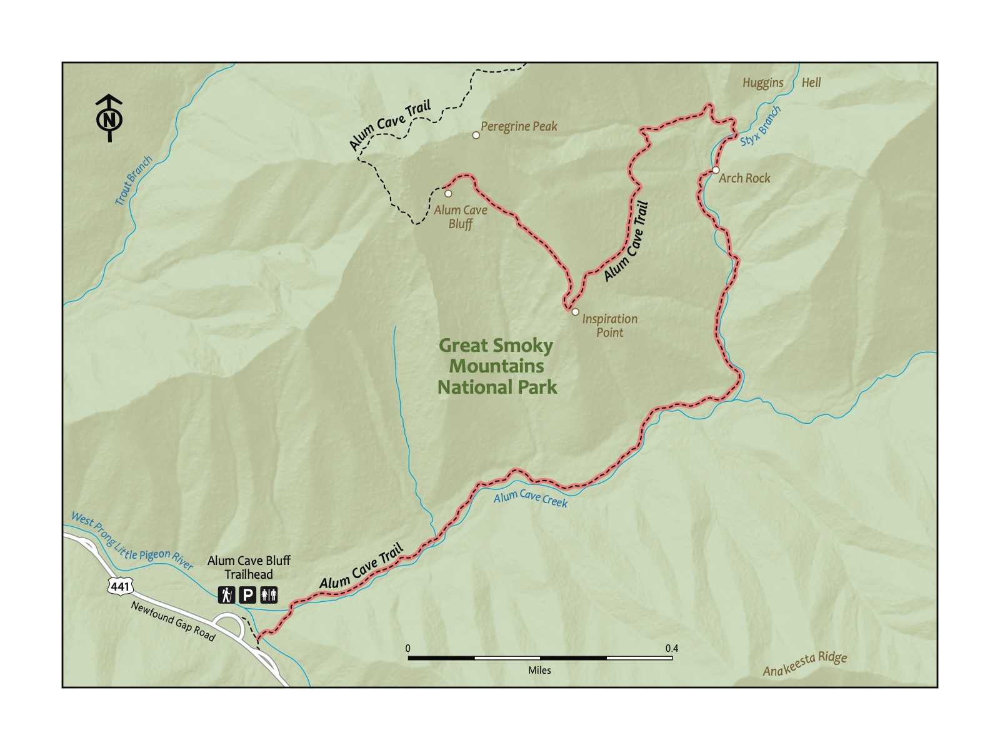
Overview
This is a hike up arguably the finest trail in the Great Smoky Mountains National Park. The trail starts at a pretty trailhead along Highway 441, the main road through the park. The trail continues along the super scenic Alum Cave Creek; the trail is very well-maintained and easily hiked by younger children. The trail climbs through a unique geological feature you hike through, Arch Rock, then heads up more steeply toward Mt. LeConte. The trail then crosses an overlook surrounded by Mountain Laurel before climbing farther toward Alum Cave, yet another unique geological feature, Alum Cave, you hike beneath. It’s epic. This is a perfect spot for a rest and a picnic before returning to the trailhead. This is a challenging hike, and finding parking can also be a challenge, but it is worth the investment of time and effort, particularly for older kids or little kids looking for a big challenge. 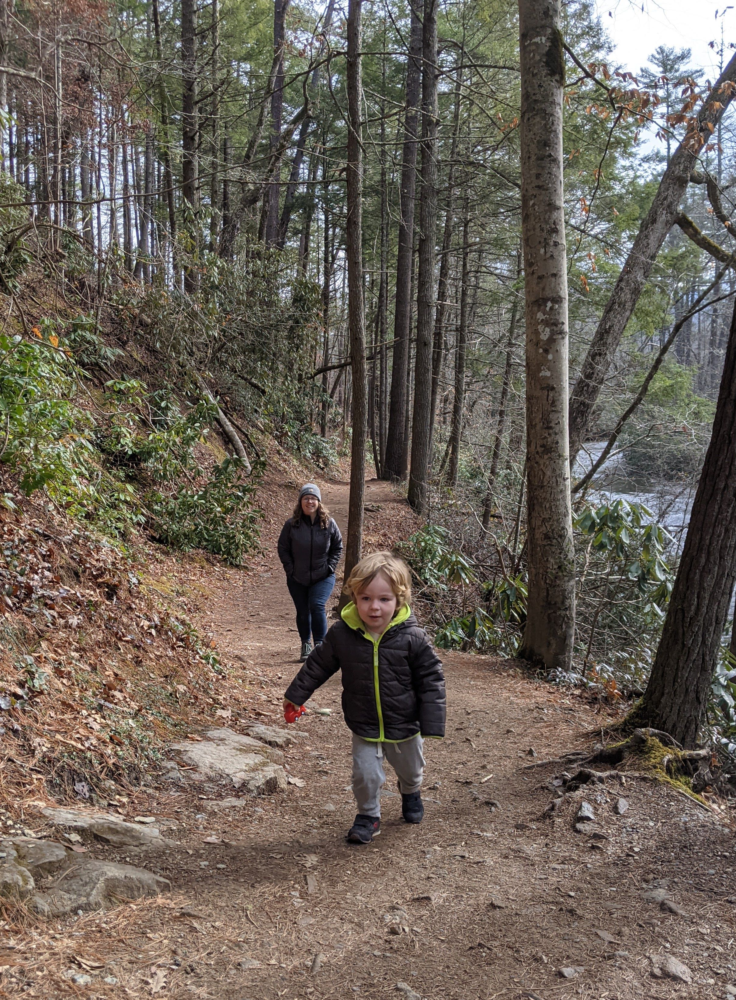
Directions to the Trailhead
| Trailhead Address | Alum Cave Trailhead Parking Area, 3639 Newfound Gap Rd, Gatlinburg, TN 37738 |
|---|---|
| Trailhead GPS Coordinates | 35.62872, -83.45076 |
This is one of the busiest parking areas and trailheads in the park. Particularly with children, visiting during periods that are less busy can be essential for quickly finding a spot. Apart from visiting outside of busy periods, arriving in the early-mid afternoon can be a good time, as many who arrived in the morning are departing. Try to park at one of the two parking areas immediately beside the trailhead (one alongside the road, the other near the seasonal toilet). If you cannot, other parking is available, but from those you have to walk along the side of the road to reach the trailhead. If two or more adults are present, consider dropping children off with one adult, while the other finds a spot. After finding a spot, look for the signs for the Alum Cave Trail.
Trail Description
| Distance from Start | Description |
|---|---|
| 0.0 | Start on the Alum Cave Trail. Almost immediately cross a bridge over the West Prong of the Little Pigeon River. |
| 0.1 | Continue on the trail, now along Alum Cave Creek. The trail gradually climbs up a wide, scenic pathway, occasionally crossing |
| 0.6 | Fun spots to splash in the creek abound around this section. Pick one and cool off in warmer weather! |
| 1.3 | Cross a bridge and then climb up the stairs through Arch Rock. This is an optional point at which to turn-around and return to the start. |
| 1.4 | Cross a footlog and enter a different part of the hike, one where you will ascend more steeply (though the trail remains moderately steep here). |
| 1.9 | Reach inspiration point, a rocky prominence and scenic overlook — and a great point to pause or return back to the start, though the bluffs are only a bit further. |
| 2.2 | Steep climb up stairs. Almost there! |
| 2.25 | Alum Cave Bluffs. Rest, soak in the views, and get ready for the return hike (almost all downhill!). The trail to Mount LeConte continues past the bluffs. |
| 4.5 | Trailhead. |

Nearby
- Visit Sevierville, Pigeon Forge, and Gatlinburg. Sevierville, Pigeon Forge, and Gatlinburg loosely form a corridor from I-40 to the entrance to the Great Smoky Mountains National Park. Sevierville and (especially) Pigeon Forge feature tourist attractions, restaurants, and a very wide variety of shops; Gatlinburg is touristy but has a more small-town character. As tourist destinations, all three can be busy, but they can be fun places to stop with happy but tired kiddos.
- Hiking on to LeConte for a grand adventure! You may continue farther along on the Alum Cave Trail to Mount LeConte, a peak with only around 40 feet less height than Kuwohi, but only accessible via (lengthy) hikes—the roundtrip hike from the Alum Cave Trail Trailhead to Mount LeConte is around 11 very challenging miles. There is a lodge at which you can reserve a rustic room—LeConte Lodge (LeConte Lodge · Gatlinburg, TN 37738)—but it can be difficult to secure a reservation. The LeConte Lodge includes a store at which day hikers can purchase snacks, coveted t-shirts, and even more coveted no-bake cookies.

Deepening the Experience
Sdf
[][filterwater]
Recommended Books, Resources, and Organizations
Finding Community
Bigger Kids
Appendices
Directions Seven Islands Loop The drive from Knoxville is easy. Follow I-40 east, until one leaves the interstate at exit 402 and drives around two miles Midway Road. Here, though brief, the drive can become a bit confusing. Turn left onto Maple Road, staying on this road for just under one mile. Then, turn right onto Kodak Road, turning left onto Kelly Road to arrive at the parking lot.